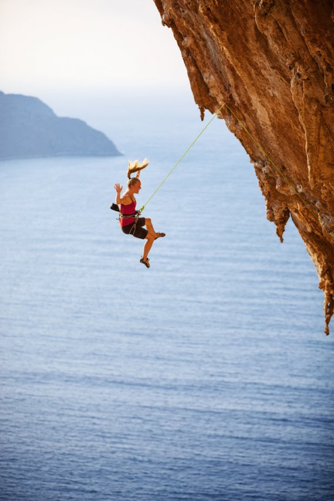
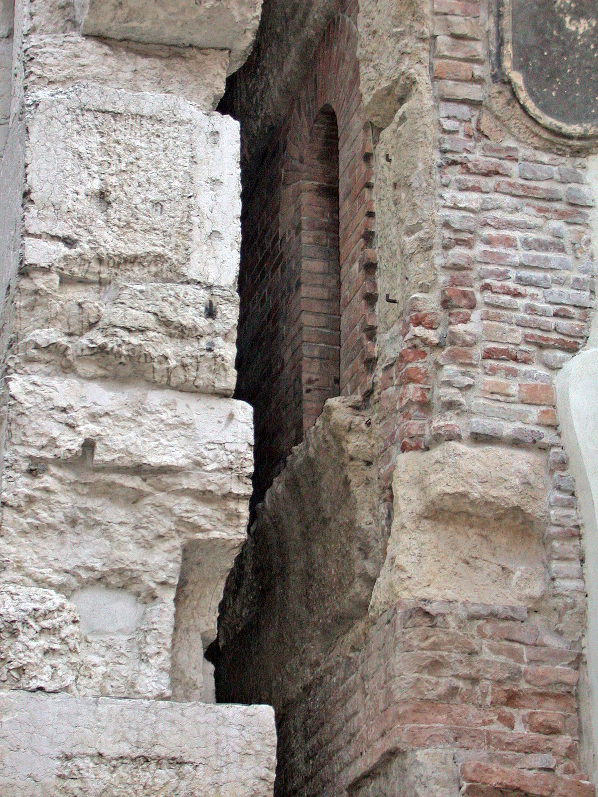

Spintos internetu už prieinamą kainą | pigu.lt
2020.10.29 07:48

Mūsų interneto svetainėje yra naudojami slapukai. Slapukai padeda užtikrinti tinkamą tinklapio veikimą bei jo tobulinimą, todėl būtinieji slapukai (techniniai, funkciniai bei analitiniai) yra įdiegiami automatiškai. Siekiant individualizuoti jūsų naršymo patirtį bei pateikti pasiūlymus, kurie būtų aktualūs būtent Jums tinklapyje taip pat naudojami tiksliniai slapukai. Paspaudę „sutinku“ Jūs sutinkate su tikslinių slapukų įdiegimu ir naudojimu. Savo sutikimą galėsite atšaukti bet kuriuo metu, pakeisdami savo interneto naršyklės nustatymus ir ištrindami įrašytus slapukus. Daugiau informacijos - slapukų politikoje Sutinku Visos prekės
Konsultuojame visą parą: +370 661 05555 arba palikite pranešimą Informacija apie užsakymą
LT RU Atsisiųskite Pristatymas Informacija Pristatymas Atsisiųskite Informacija apie užsakymą Apmokėjimas Grąžinimas ir garantinis taisymas Apie Pigu.lt Prekiaukite per Pigu.lt Karjera Kontaktai Pirkimo-pardavimo taisyklės Privatumo politika Asmens duomenų apsauga Svarbiausią informaciją rasite čia Paspaudę “Mano Pigu.lt”prisijungsite prie savo
paskyros arba
susikursite naują Prisijungti Registruotis
Sveiki atvykę į Pigu.lt
Prisijungti Prisijungti su Facebook Neturite paskyros? RegistruotisRegistruotiems vartotojams grįžta 0,5% pirkinių vertės
Mano profilis Mano užsakymai Pristatymo adresai Nuolaidų kodai PiguEurai VIP klubas Patikusios prekės ( 0 ) Prekių 0 krepšelis Visos prekės Apsaugos, dezinfekcinės priemonės Top pasiūlymai Naujienos Išparduotuvė Prekės su pažeista pakuote Specialios apsaugos priemonės Kaukės, respiratoriai Dezinfekcinis skystis Vienkartinės pirštinės Apsauginiai skydeliai ir akiniai Apsauginės sienelės, dezinfekcinės stotelės Medicininės prekės Klausos aparatai Pirmoji pagalba Termometrai Inhaliatoriai Kraujospūdžio matuokliai Įtvarai Masažuokliai Optika Alkotesteriai Slaugos prekės Higienos prekės Veido priežiūrai Plaukų priežiūrai Dantų priežiūrai Intymiai higienai Skutimosi priemonės Muilai Vatos gaminiai, drėgnos servetėlės Kremai nuo saulės Natūrali ir ekologiška kosmetika Įranga žmonėms su specialiais poreikiais Vitaminai ir maisto papildai Arbatos ir vaistažolės Vitaminai ir maisto papildai imunitetui Vitaminai ir maisto papildai grožiui Vitaminai ir maisto papildai gerai savijautai Batonėliai Maisto papildai sportui Vaikui ir mamai Prekės mamoms Kūdikių maitinimo priemonės Kūdikių maistas Sauskelnės Kūdikių priežiūros priemonės Kosmetika vaikams ir mamomsSpecialios apsaugos priemonės
Kaukės, respiratoriai Dezinfekcinis skystis Vienkartinės pirštinės Apsauginiai skydeliai ir akiniai Apsauginės sienelės, dezinfekcinės stotelėsMedicininės prekės
Klausos aparatai Pirmoji pagalba Termometrai Inhaliatoriai Kraujospūdžio matuokliai Įtvarai Masažuokliai Optika Alkotesteriai Slaugos prekėsHigienos prekės
Veido priežiūrai Plaukų priežiūrai Dantų priežiūrai Intymiai higienai Skutimosi priemonės Muilai Vatos gaminiai, drėgnos servetėlės Kremai nuo saulės Natūrali ir ekologiška kosmetika Įranga žmonėms su specialiais poreikiaisVitaminai ir maisto papildai
Arbatos ir vaistažolės Vitaminai ir maisto papildai imunitetui Vitaminai ir maisto papildai grožiui Vitaminai ir maisto papildai gerai savijautai Batonėliai Maisto papildai sportuiVaikui ir mamai
Prekės mamoms Kūdikių maitinimo priemonės Kūdikių maistas Sauskelnės Kūdikių priežiūros priemonės Kosmetika vaikams ir mamoms Apranga, avalynė, aksesuarai Naujienos Išparduotuvė Prekės su pažeista pakuote Drabužiai moterims Suknelės Sportinė apranga moterims Megztiniai moterims Marškinėliai moterims Džemperiai moterims Tunikos Palaidinės, marškiniai moterims Sijonai Moteriški švarkeliai Kostiumėliai moterims Kelnės moterims Džinsai moterims Paltai moterims Striukės moterims Slidinėjimo apranga moterims Apatinis trikotažas moterims Maudymosi kostiumėliai Naktiniai, pižamos moterims Chalatai moterims Apatinių komplektai Liemenėlės Kelnaitės Apatiniai marškinėliai moterims Liekninantys apatiniai Pėdkelnės, kojinės moterims Termo apatiniai moterims Avalynė moterims Sportiniai bateliai, kedai moterims Basutės moterims Bateliai moterims Šlepetės moterims Guminiai batai moterims Aulinukai, ilgaauliai batai moterims Aksesuarai moterims Kuprinės Moteriškos rankinės Piniginės, kortelių dėklai moterims Moteriški laikrodžiai Akiniai nuo saulės Kepurės moterims Moteriškos pirštinės Skarelės, šalikai moterims Papuošalai Moteriški diržai Moteriški skėčiai Papuošalų dėžutės Vyriški drаbužiai Sportinė apranga vyrams Megztiniai vyrams Džemperiai vyrams Vyriški mаrškinėliai Vyriški marškiniai Vyriški kostiumai Vyriški švarkai Vyriškos liemenės Džinsai vyrams Vyriškos kelnės Vyriškos striukės Vyriški paltai Vyriškа slidinėjimo apranga Apatinis trikotažas vyrams Vyriški chalatai, pižamos Trumpikės Maudymosi šortai, glaudės Vyriški apatiniai marškinėliai Vyriškos kojinės Vyriški termo apatiniai Avalynė vyrams Kedai vyrams Vyriškos šlepetės, basutės Vyriški batai Aksesuarai vyrams Kuprinės Vyriškos rankinės Vyriškos piniginės, kortelių dėklai Vyriški laikrodžiai Akiniai nuo saulės vyrams Kaklaraiščiai, peteliškės Vyriški papuošalai Vyriški šalikai, kepurės, pirštinės Vyriški diržai Vyriški skėčiai Drabužiai ir avalynė vaikams Drabužiai mergaitėms Drabužiai berniukams Žiemos drabužiai vaikams Drabužiai kūdikiams Avalynė vaikams Aksesuarai vaikams Populiariausi drabužių prekiniai ženklai 4F apranga Adidas apranga ir avalynė Nike apranga ir avalynė Geox avalynė Lorenzo avalynė Tommy HIlfiger prekės Guess prekės Rieker avalynė Audimas apranga Puma apranga ir avalynė Crocs™ avalynė Drabužiai Avalynė AksesuaraiDrabužiai moterims
Suknelės Sportinė apranga moterims Megztiniai moterims Marškinėliai moterims Džemperiai moterims Tunikos Palaidinės, marškiniai moterims Sijonai Moteriški švarkeliai Kostiumėliai moterims Kelnės moterims Džinsai moterims Paltai moterims Striukės moterims Slidinėjimo apranga moterimsApatinis trikotažas moterims
Maudymosi kostiumėliai Naktiniai, pižamos moterims Chalatai moterims Apatinių komplektai Liemenėlės Kelnaitės Apatiniai marškinėliai moterims Liekninantys apatiniai Pėdkelnės, kojinės moterims Termo apatiniai moterimsAvalynė moterims
Sportiniai bateliai, kedai moterims Basutės moterims Bateliai moterims Šlepetės moterims Guminiai batai moterims Aulinukai, ilgaauliai batai moterimsAksesuarai moterims
Kuprinės Moteriškos rankinės Piniginės, kortelių dėklai moterims Moteriški laikrodžiai Akiniai nuo saulės Kepurės moterims Moteriškos pirštinės Skarelės, šalikai moterims Papuošalai Moteriški diržai Moteriški skėčiai Papuošalų dėžutėsVyriški drаbužiai
Sportinė apranga vyrams Megztiniai vyrams Džemperiai vyrams Vyriški mаrškinėliai Vyriški marškiniai Vyriški kostiumai Vyriški švarkai Vyriškos liemenės Džinsai vyrams Vyriškos kelnės Vyriškos striukės Vyriški paltai Vyriškа slidinėjimo aprangaApatinis trikotažas vyrams
Vyriški chalatai, pižamos Trumpikės Maudymosi šortai, glaudės Vyriški apatiniai marškinėliai Vyriškos kojinės Vyriški termo apatiniaiAvalynė vyrams
Kedai vyrams Vyriškos šlepetės, basutės Vyriški bataiAksesuarai vyrams
Kuprinės Vyriškos rankinės Vyriškos piniginės, kortelių dėklai Vyriški laikrodžiai Akiniai nuo saulės vyrams Kaklaraiščiai, peteliškės Vyriški papuošalai Vyriški šalikai, kepurės, pirštinės Vyriški diržai Vyriški skėčiaiDrabužiai ir avalynė vaikams
Drabužiai mergaitėms Drabužiai berniukams Žiemos drabužiai vaikams Drabužiai kūdikiams Avalynė vaikams Aksesuarai vaikamsPopuliariausi drabužių prekiniai ženklai
4F apranga Adidas apranga ir avalynė Nike apranga ir avalynė Geox avalynė Lorenzo avalynė Tommy HIlfiger prekės Guess prekės Rieker avalynė Audimas apranga Puma apranga ir avalynė Crocs™ avalynėDrabužiai
Avalynė
Aksesuarai
Baldai ir namų interjeras Top pasiūlymai Naujienos Išparduotuvė Prekės su pažeista pakuote Svetainės baldai Sofos Minkšti kampai Svetainės foteliai Minkštų baldų komplektai Sekcijos Komodos Svetainės spintelės Kavos staliukai Lentynos Sėdmaišiai ir pufai TV staliukai Vitrinos, indaujos Svetainės stalai Stalai-konsolės Baldų kolekcijos Minkštų baldų kolekcijos Spintos Black Red White baldai Miegamojo baldai Miegamojo komplektai Lovos Čiužiniai Antčiužiniai Lovų grotelės Spintelės prie lovos Kosmetiniai staliukai Sleepwell čiužiniai ir lovos Spintos Miegamojo baldų kolekcijos Premium baldai Virtuvės baldai Virtuvės baldų komplektai Virtuvinės spintelės Virtuvės ir valgomojo stalai, staliukai Virtuvės ir valgomojo kėdės Valgomojo komplektai Virtuvės stalviršiai Virtuvės baldų priedai Virtuvės baldų kolekcijos Vonios kambario baldai Vonios spintelės Vonios lentynos Vonios komplektai Vonios veidrodžiai Vonios aksesuarai Vonios kambario baldų kolekcijos Biuro baldai Kompiuteriniai, rašomieji stalai Biuro kėdės Biuro lentynos, spintelės Biuro baldų kolekcijos Prieškambario baldai Prieškambario komplektai Batų spintelės, lentynos ir suolai Drabužių kabyklos Prieškambario spintos Prieškambario veidrodžiai Prieškambario spintelės Prieškambario baldų kolekcijos Vaiko kambario baldai Vaikiškos lovos Kūdikių lovytės Vaikiškos spintelės Vaikiški rašomieji stalai Vaikiškos kėdutės ir staliukai Vaikiški sėdmaišiai, foteliai, pufai Vaikiškos komodos Vaikiškos lentynos Vaikiškos spintos Vaikiškos mokyklinės kėdės Žaislų dėžės Vaiko kambario baldų komplektai Vaikų kambario baldų kolekcijos Lauko baldai Lauko baldų komplektai Gultai Hamakai Lauko kėdės, foteliai, pufai Pagalvės, užvalkalai, apsaugos Pavėsinės Skėčiai, markizės, stovai Vaikiški lauko baldai Smėlio dėžės, smėlis Lauko stalai, staliukai Lauko suolai Lauko sūpynės Lauko baldų kolekcijos Priedai baldams Šviestuvai ir apšvietimo įranga Lubiniai šviestuvai Pakabinami šviestuvai Įmontuojami šviestuvai, LED panelės Sieniniai šviestuvai Staliniai šviestuvai Toršerai Vaikiški šviestuvai Šviestuvai - ventiliatoriai Kilimai, kilimėliai Kilimai Durų kilimėliai Patalynė Tapetai, fototapetai Dekoratyvinis akmuo Roletai, užuolaidos, karnizai Užuolаidos Roletai Romanetės Karnizai Žaliuzės Tinkleliai nuo vabzdžių Namų interjeras Interjero detalės Floristika Reprodukcijos, paveikslai Interjero lipdukai Rėmeliai, nuotraukų albumai Sieniniai laikrodžiai Vazos Žvakidės, žvakės Mobilios interjero sienelės VeidrodžiaiSvetainės baldai
Sofos Minkšti kampai Svetainės foteliai Minkštų baldų komplektai Sekcijos Komodos Svetainės spintelės Kavos staliukai Lentynos Sėdmaišiai ir pufai TV staliukai Vitrinos, indaujos Svetainės stalai Stalai-konsolės Baldų kolekcijos Minkštų baldų kolekcijos SpintosBlack Red White baldai
Miegamojo baldai
Miegamojo komplektai Lovos Čiužiniai Antčiužiniai Lovų grotelės Spintelės prie lovos Kosmetiniai staliukai Sleepwell čiužiniai ir lovos Spintos Miegamojo baldų kolekcijosPremium baldai
Virtuvės baldai
Virtuvės baldų komplektai Virtuvinės spintelės Virtuvės ir valgomojo stalai, staliukai Virtuvės ir valgomojo kėdės Valgomojo komplektai Virtuvės stalviršiai Virtuvės baldų priedai Virtuvės baldų kolekcijosVonios kambario baldai
Vonios spintelės Vonios lentynos Vonios komplektai Vonios veidrodžiai Vonios aksesuarai Vonios kambario baldų kolekcijosBiuro baldai
Kompiuteriniai, rašomieji stalai Biuro kėdės Biuro lentynos, spintelės Biuro baldų kolekcijosPrieškambario baldai
Prieškambario komplektai Batų spintelės, lentynos ir suolai Drabužių kabyklos Prieškambario spintos Prieškambario veidrodžiai Prieškambario spintelės Prieškambario baldų kolekcijosVaiko kambario baldai
Vaikiškos lovos Kūdikių lovytės Vaikiškos spintelės Vaikiški rašomieji stalai Vaikiškos kėdutės ir staliukai Vaikiški sėdmaišiai, foteliai, pufai Vaikiškos komodos Vaikiškos lentynos Vaikiškos spintos Vaikiškos mokyklinės kėdės Žaislų dėžės Vaiko kambario baldų komplektai Vaikų kambario baldų kolekcijosLauko baldai
Lauko baldų komplektai Gultai Hamakai Lauko kėdės, foteliai, pufai Pagalvės, užvalkalai, apsaugos Pavėsinės Skėčiai, markizės, stovai Vaikiški lauko baldai Smėlio dėžės, smėlis Lauko stalai, staliukai Lauko suolai Lauko sūpynės Lauko baldų kolekcijosPriedai baldams
Šviestuvai ir apšvietimo įranga
Lubiniai šviestuvai Pakabinami šviestuvai Įmontuojami šviestuvai, LED panelės Sieniniai šviestuvai Staliniai šviestuvai Toršerai Vaikiški šviestuvai Šviestuvai - ventiliatoriaiKilimai, kilimėliai
Kilimai Durų kilimėliaiPatalynė
Tapetai, fototapetai
Dekoratyvinis akmuo
Roletai, užuolaidos, karnizai
Užuolаidos Roletai Romanetės Karnizai Žaliuzės Tinkleliai nuo vabzdžiųNamų interjeras
Interjero detalės Floristika Reprodukcijos, paveikslai Interjero lipdukai Rėmeliai, nuotraukų albumai Sieniniai laikrodžiai Vazos Žvakidės, žvakės Mobilios interjero sienelėsVeidrodžiai
Kvepalai, kosmetika Top pasiūlymai Naujienos Išparduotuvė Prekės su pažeista pakuote Kvepalai Kvepalai moterims Kvepalai vyrams Kvepalų naujienos Kvepalų rinkiniai Kvepalai vaikams Parfumuota kosmetika moterims Parfumuota kosmetika vyrams Feromonai Namų kvapai Prabangūs kvepalai Kosmetika Kosmetikos rinkiniai Lietuviška kosmetika Latviška kosmetika Korėjietiška kosmetika Prancūziška kosmetika Kosmetika vaikams ir mamoms Natūrali ir ekologiška kosmetika Prabangi kosmetika Profesionali kosmetika Kosmetikos naujienos Kosmetika vyrams Dekoratyvinė kosmetika Akių šešėliai, pieštukai, blakstienų tušai, serumai Antakių dažai, pieštukai Priklijuojamos blakstienos, blakstienų rietikliai Lūpų dažai, blizgiai, balzamai, vazelinai Makiažo pagrindai, pudros Bronzantai, skaistalai Nagų lakai, stiprintojai Manikiūro, pedikiūro priemonės Makiažo šepetėliai, kempinėlės Kosmetinės, veidrodėliai Asmens higienai Dušo želė, aliejai Muilai Įklotai, tamponai, intymios higienos prausikliai Dezodorantai Dantų šepetėliai, pastos Depiliacijos priemonės Vatos gaminiai, drėgnos servetėlės Prezervatyvai Lubrikantai Skutimosi priemonės ir kosmetika Kosmetika veidui Veido kremai Veido aliejai, serumai Veido kaukės, paakių kaukės Paakių kremai, serumai Veido prausikliai, valikliai Plaukų priežiūrai Šampūnai Balzamai, kondicionieriai Priemonės plaukų stiprinimui Plaukų formavimo priemonės Plaukų dažai Šepečiai, šukos Plaukų aksesuarai Kosmetika kūnui Kūno kremai, losjonai Eteriniai, kosmetiniai aliejai, hidrolatai Anticeliulitinės, stangrinamosios priemonės Kremai nuo saulės Soliariumo kremai Masažo aliejai Priemonės nuo uodų, erkių Kūno šveitikliai Dušo želė, aliejai Muilai Populiariausi kvepalai Calvin Klein kvepalai Versace kvepalai Hugo Boss kvepalai Giorgio Armani kvepalai Victoria's Secret kvepalai ir kosmetika Elizabeth Arden kvepalai Dolce & Gabbana kvepalai Lanvin kvepalai Paco Rabanne kvepalai Carolina Herrera kvepalai Lacoste kvepalai Trussardi kvepalai Antonio Banderas kvepalai Populiariausia kosmetika L'Oréal Paris kosmetika Filorga kosmetika TIGI kosmetika Australian Gold kosmetika L'Oreal Professionnel kosmetika Chi kosmetika Kallos kosmetika Schwarzkopf kosmetika Olaplex kosmetika Max Factor kosmetika Collistar kosmetika Gillette kosmetika Bourjois kosmetika Clinique kosmetikaKvepalai
Kvepalai moterims Kvepalai vyrams Kvepalų naujienos Kvepalų rinkiniai Kvepalai vaikams Parfumuota kosmetika moterims Parfumuota kosmetika vyrams Feromonai Namų kvapai Prabangūs kvepalaiKosmetika
Kosmetikos rinkiniai Lietuviška kosmetika Latviška kosmetika Korėjietiška kosmetika Prancūziška kosmetika Kosmetika vaikams ir mamoms Natūrali ir ekologiška kosmetika Prabangi kosmetika Profesionali kosmetika Kosmetikos naujienos Kosmetika vyramsDekoratyvinė kosmetika
Akių šešėliai, pieštukai, blakstienų tušai, serumai Antakių dažai, pieštukai Priklijuojamos blakstienos, blakstienų rietikliai Lūpų dažai, blizgiai, balzamai, vazelinai Makiažo pagrindai, pudros Bronzantai, skaistalai Nagų lakai, stiprintojai Manikiūro, pedikiūro priemonės Makiažo šepetėliai, kempinėlės Kosmetinės, veidrodėliaiAsmens higienai
Dušo želė, aliejai Muilai Įklotai, tamponai, intymios higienos prausikliai Dezodorantai Dantų šepetėliai, pastos Depiliacijos priemonės Vatos gaminiai, drėgnos servetėlės Prezervatyvai Lubrikantai Skutimosi priemonės ir kosmetikaKosmetika veidui
Veido kremai Veido aliejai, serumai Veido kaukės, paakių kaukės Paakių kremai, serumai Veido prausikliai, valikliaiPlaukų priežiūrai
Šampūnai Balzamai, kondicionieriai Priemonės plaukų stiprinimui Plaukų formavimo priemonės Plaukų dažai Šepečiai, šukos Plaukų aksesuaraiKosmetika kūnui
Kūno kremai, losjonai Eteriniai, kosmetiniai aliejai, hidrolatai Anticeliulitinės, stangrinamosios priemonės Kremai nuo saulės Soliariumo kremai Masažo aliejai Priemonės nuo uodų, erkių Kūno šveitikliai Dušo želė, aliejai MuilaiPopuliariausi kvepalai
Calvin Klein kvepalai Versace kvepalai Hugo Boss kvepalai Giorgio Armani kvepalai Victoria's Secret kvepalai ir kosmetika Elizabeth Arden kvepalai Dolce & Gabbana kvepalai Lanvin kvepalai Paco Rabanne kvepalai Carolina Herrera kvepalai Lacoste kvepalai Trussardi kvepalai Antonio Banderas kvepalaiPopuliariausia kosmetika
L'Oréal Paris kosmetika Filorga kosmetika TIGI kosmetika Australian Gold kosmetika L'Oreal Professionnel kosmetika Chi kosmetika Kallos kosmetika Schwarzkopf kosmetika Olaplex kosmetika Max Factor kosmetika Collistar kosmetika Gillette kosmetika Bourjois kosmetika Clinique kosmetika Vaikams ir kūdikiams Top pasiūlymai Naujienos Išparduotuvė Prekės su pažeista pakuote Žaislai vaikams Žaislai berniukams Žaislai mergaitėms Žaislai kūdikiams Prekės mokyklai Kuprinės mokyklai, sportiniai maišeliai Penalai Rankdarbiams Piešimo, tapybos, lipdymo reikmenys Kanceliarinės prekės Vadovėliai Pratybų sąsiuviniai Sąsiuviniai ir popieriaus prekės Rašymo priemonės Žaidimai vаikams Stalo žaidimai Kompiuteriniai žaidimai Žaidimų konsolės Žiemos sportas Vaikiški planšetiniai kompiuteriai Kūdikių prekės Autokėdutės ir jų priedai Vaikiški vežimėliai ir jų priedai Sauskelnės Maitinimo priemonės Kūdikio priežiūrai Prekės mamoms Kūdikių ir vaikų maistas Vaikštynės Nešioklės Kūdikių lovytės Maniežai vaikams Čiužiniai kūdikiams Patalynė kūdikiams Gultukai ir sūpynės Kūdikio kraitelis Saugos varteliai, apsaugos Antspaudai kūdikiams Drabužiai ir avalynė vaikams Avalynė vaikams Drabužiai kūdikiams Drabužiai mergaitėms Drabužiai berniukams Šventinė apranga vaikams Aksesuarai vaikams Žiemos drabužiai vaikams Žieminiai batai vaikams Žaislai vaikams iki 3 metų LEGO® žaislai Minkšti (pliušiniai) žaislai Edukaciniai žaislai Muzikiniai žaislai Barškučiai, kramtukai Stumdukai, paspiriamos mašinėlės Supamieji žaislai Vonios žaislai Mediniai žaislai Baseinai su kamuoliukais Žаislai vаikams nuo 3 metų LEGO® žaidimai Konstruktoriai ir kaladėlės Stalo žaidimai, galvosūkiai Profesiniai žaislai Lavinamieji žaislai Dėlionės (puzzle) Deimantinės mozaikos Tapyba pagal skaičius Interaktyvūs žaislai Lėlės, lėlių namai Žaisliniai ginklai Žaislinės mašinos, traukinukai, lėktuvai, laivai Filmukų herojai, figūrėlės Dinozaurai, gyvūnai Minkšti (pliušiniai) žaislai Vaiko kambarys, šventinė atributika, knygos Vaiko kambario baldai Patalynė vaikams Vaikiški fototapetai Vaikiški šviestuvai Knygos vaikams Dekoracijos, indai vaikų šventėms Karnavaliniai kostiumai vaikams Kvepalai vaikams Lauko žaislai Dviratukai vaikams Paspirtukai vaikams Balansiniai dviratukai Elektromobiliai vaikams Čiuožyklos Sūpynės Triratukai Smėlio dėžės, smėlis Vaikų žaidimų nameliai Vandens, smėlio ir paplūdimio žaislai Batutai vaikams Riedučiai Riedlentės Rogutės Populiariausi prekiniai ženklai LEGO® Cool Club Maxi Cosi Lionelo Kinderkraft Smiki Philips Avent PLAYMOBIL® Joie PAMPERS Fisher Price Moony L.O.L. DINO BIKES BabybjörnŽaislai vaikams
Žaislai berniukams Žaislai mergaitėms Žaislai kūdikiamsPrekės mokyklai
Kuprinės mokyklai, sportiniai maišeliai Penalai Rankdarbiams Piešimo, tapybos, lipdymo reikmenys Kanceliarinės prekės Vadovėliai Pratybų sąsiuviniai Sąsiuviniai ir popieriaus prekės Rašymo priemonėsŽaidimai vаikams
Stalo žaidimai Kompiuteriniai žaidimai Žaidimų konsolės Žiemos sportas Vaikiški planšetiniai kompiuteriaiKūdikių prekės
Autokėdutės ir jų priedai Vaikiški vežimėliai ir jų priedai Sauskelnės Maitinimo priemonės Kūdikio priežiūrai Prekės mamoms Kūdikių ir vaikų maistas Vaikštynės Nešioklės Kūdikių lovytės Maniežai vaikams Čiužiniai kūdikiams Patalynė kūdikiams Gultukai ir sūpynės Kūdikio kraitelis Saugos varteliai, apsaugos Antspaudai kūdikiamsDrabužiai ir avalynė vaikams
Avalynė vaikams Drabužiai kūdikiams Drabužiai mergaitėms Drabužiai berniukams Šventinė apranga vaikams Aksesuarai vaikams Žiemos drabužiai vaikams Žieminiai batai vaikamsŽaislai vaikams iki 3 metų
LEGO® žaislai Minkšti (pliušiniai) žaislai Edukaciniai žaislai Muzikiniai žaislai Barškučiai, kramtukai Stumdukai, paspiriamos mašinėlės Supamieji žaislai Vonios žaislai Mediniai žaislai Baseinai su kamuoliukaisŽаislai vаikams nuo 3 metų
LEGO® žaidimai Konstruktoriai ir kaladėlės Stalo žaidimai, galvosūkiai Profesiniai žaislai Lavinamieji žaislai Dėlionės (puzzle) Deimantinės mozaikos Tapyba pagal skaičius Interaktyvūs žaislai Lėlės, lėlių namai Žaisliniai ginklai Žaislinės mašinos, traukinukai, lėktuvai, laivai Filmukų herojai, figūrėlės Dinozaurai, gyvūnai Minkšti (pliušiniai) žaislaiVaiko kambarys, šventinė atributika, knygos
Vaiko kambario baldai Patalynė vaikams Vaikiški fototapetai Vaikiški šviestuvai Knygos vaikams Dekoracijos, indai vaikų šventėms Karnavaliniai kostiumai vaikams Kvepalai vaikamsLauko žaislai
Dviratukai vaikams Paspirtukai vaikams Balansiniai dviratukai Elektromobiliai vaikams Čiuožyklos Sūpynės Triratukai Smėlio dėžės, smėlis Vaikų žaidimų nameliai Vandens, smėlio ir paplūdimio žaislai Batutai vaikams Riedučiai Riedlentės RogutėsPopuliariausi prekiniai ženklai
LEGO® Cool Club Maxi Cosi Lionelo Kinderkraft Smiki Philips Avent PLAYMOBIL® Joie PAMPERS Fisher Price Moony L.O.L. DINO BIKES Babybjörn Autoprekės Top pasiūlymai Naujienos Išparduotuvė Prekės su pažeista pakuote Padangos Vasarinės padangos Žieminės padangos Universalios padangos Akumuliatoriai ir jų krovikliai Akumuliatoriai Akumuliatorių krovikliai Automobiliniai tepalai Variklinės alyvos Kitos alyvos Alyvos priedai Auto aksesuarai ir priedai Langų tamsinimo plėvelės Duslintuvų antgaliai ir bakeliai Lemputės Pavarų svirties antgaliai Porankiai Ratų gaubtai Valytuvai Vairų užvalkalai ir vairai Automobiliniai kilimėliai Modeliniai tekstiliniai kilimėliai Modeliniai guminiai kilimėliai Universalūs kilimėliai Modeliniai bagažinių kilimėliai Autoturizmo reikmenys Stogo bagažinės Dviračių laikikliai Stogo skersiniai ir bagažinių atitvarai Autokėdutės Automobilinė chemija ir oro gaivikliai Langų ir aušinimo skysčiai Automobilinė chemija Automobiliniai dažai Valymo šluostės, servetėlės Salono oro gaivikliai Aukšto slėgio plovimo įranga ir priedai Plovimo įranga Plovimo įrangos priedai Kitos auto prekės Auto reikmenys Automobilio priežiūros priemonės žiemai Alkotesteriai Sėdynių užtiesalai, priedai Nano technologijos automobiliams Saugos reikmenys Moto prekės Moto reikmenys Moto alyvos Moto akumuliatoriai Moto apranga GPS navigacija GPS imtuvai Vaizdo registratoriai Elektros įranga FM moduliatoriai Įtampos keitikliai Parkavimo sistemos Аutomobilinė laisvų rankų įranga Auto lemрutės Automobilių 12V el. priedai Auto aparatūra Automagnetolos USB adapteriai gamyklinei garso sistemai Automobiliniai garsiakalbiai Automobiliniai stiprintuvai Radijo ryšys Radijo stotelės, racijos Radijo ryšio antenos Kuro talpos Automobilių dalys StarteriaiPadangos
Vasarinės padangos Žieminės padangos Universalios padangosAkumuliatoriai ir jų krovikliai
Akumuliatoriai Akumuliatorių krovikliaiAutomobiliniai tepalai
Variklinės alyvos Kitos alyvos Alyvos priedaiAuto aksesuarai ir priedai
Langų tamsinimo plėvelės Duslintuvų antgaliai ir bakeliai Lemputės Pavarų svirties antgaliai Porankiai Ratų gaubtai Valytuvai Vairų užvalkalai ir vairaiAutomobiliniai kilimėliai
Modeliniai tekstiliniai kilimėliai Modeliniai guminiai kilimėliai Universalūs kilimėliai Modeliniai bagažinių kilimėliaiAutoturizmo reikmenys
Stogo bagažinės Dviračių laikikliai Stogo skersiniai ir bagažinių atitvarai AutokėdutėsAutomobilinė chemija ir oro gaivikliai
Langų ir aušinimo skysčiai Automobilinė chemija Automobiliniai dažai Valymo šluostės, servetėlės Salono oro gaivikliaiAukšto slėgio plovimo įranga ir priedai
Plovimo įranga Plovimo įrangos priedaiKitos auto prekės
Auto reikmenys Automobilio priežiūros priemonės žiemai Alkotesteriai Sėdynių užtiesalai, priedai Nano technologijos automobiliams Saugos reikmenysMoto prekės
Moto reikmenys Moto alyvos Moto akumuliatoriai Moto aprangaGPS navigacija
GPS imtuvaiVaizdo registratoriai
Elektros įranga
FM moduliatoriai Įtampos keitikliai Parkavimo sistemos Аutomobilinė laisvų rankų įranga Auto lemрutės Automobilių 12V el. priedaiAuto aparatūra
Automagnetolos USB adapteriai gamyklinei garso sistemai Automobiliniai garsiakalbiai Automobiliniai stiprintuvaiRadijo ryšys
Radijo stotelės, racijos Radijo ryšio antenosKuro talpos
Automobilių dalys
Starteriai Sportas, laisvalaikis, turizmas Top pasiūlymai Naujienos Išparduotuvė Prekės su pažeista pakuote Dviračiai, paspirtukai, riedučiai, riedlentės Dviračiai Dviratukai ir triratukai Dviračių priedai ir aksesuarai Riedučiai Riedlentės Paspirtukai Elektriniai paspirtukai Riedžiai Dviračių laikikliai Šalmai Apsaugos Sportiniai akiniai Treniruokliai, treniruočių įranga Bėgimo takeliai Elipsiniai treniruokliai Dviračiai treniruokliai Svoriai, svarmenys, grifai Daugiafunkciniai treniruokliai Treniruočių suoliukai ir stovai Steperiai treniruokliai Irklavimo treniruokliai Sporto apranga ir avalynė Sportiniai bateliai moterims Sportinė apranga moterims Sportinė apranga vyrams Sportbačiai vyrams Laisvalaikis Kepsninės, šašlykinės, rūkyklos Lauko baseinai Batutai Žaidimų stalai Pripučiamos ir paplūdimio prekės Valtys, baidarės ir jų priedai Medžioklės reikmenys Žvejybos reikmenys Azartiniai žaidimai, pokeris Hamakai, gultai, pavėsinės,sūpynės Lauko žaislai vaikams Lauko žaidimai Lagaminai, kelioniniai krepšiai Kuprinės ir krepšiai Kūrybingas laisvalaikis Stalo žaidimai Dėlionės (puzzle) Deimantinės mozaikos Tapyba pagal skaičius Rankdarbiams Turizmas Turistiniai baldai Turistiniai čiužiniai ir kilimėliai Pripučiami čiužiniai ir baldai Palapinės Miegmaišiai Turistinis inventorius Alpinizmo įranga Turistinės ir kelioninės kuprinės Gertuvės ir termo puodeliai Biotualetai Autoturizmo reikmenys Turistinio inventoriaus, drabužių ir avalynės priežiūros priemonės Priemonės nuo uodų Kepsninės, šašlykinės, rūkyklos Žiemos sportas Rogutės Pačiūžos Kalnų slidinėjimas Lygumų slidinėjimas Ledo ritulys Spоrto prekės Krepšinis Futbolas Gimnastikos ir fitneso prekės Vandens sportas Tinklinis Rankinis Plaukimas Nardymas Kovos menai Lauko tenisas Stalo tenisas Biliardas Smiginis Badmintonas Skvošas Beisbolas Grindų ir žolės riedulys Ėjimo lazdos Žiemos sportas Kuprinės ir krepšiai Žingsniamačiai, chronometrai, širdies ritmo monitoriai Įtvarai Kamuolių pompos ir adatos Žaidimų stalai Treniruokliai, treniruočių įranga Kamuoliai Maisto papildai Aminorūgštys Angliavandeniai Azoto oksido skatintojai Baltymai Batonėliai Kiti papildai Energetikai Funkcinis maistas Glutaminas Kreatinas L-karnitinas Papildai masei auginti Papildai sąnariams Produktai atsistatymui Riebalų degintojai Papildai lieknėjimui Testosterono skatintojai Vitaminai Žuvų taukaiDviračiai, paspirtukai, riedučiai, riedlentės
Dviračiai Dviratukai ir triratukai Dviračių priedai ir aksesuarai Riedučiai Riedlentės Paspirtukai Elektriniai paspirtukai Riedžiai Dviračių laikikliai Šalmai Apsaugos Sportiniai akiniaiTreniruokliai, treniruočių įranga
Bėgimo takeliai Elipsiniai treniruokliai Dviračiai treniruokliai Svoriai, svarmenys, grifai Daugiafunkciniai treniruokliai Treniruočių suoliukai ir stovai Steperiai treniruokliai Irklavimo treniruokliaiSporto apranga ir avalynė
Sportiniai bateliai moterims Sportinė apranga moterims Sportinė apranga vyrams Sportbačiai vyramsLaisvalaikis
Kepsninės, šašlykinės, rūkyklos Lauko baseinai Batutai Žaidimų stalai Pripučiamos ir paplūdimio prekės Valtys, baidarės ir jų priedai Medžioklės reikmenys Žvejybos reikmenys Azartiniai žaidimai, pokeris Hamakai, gultai, pavėsinės,sūpynės Lauko žaislai vaikams Lauko žaidimai Lagaminai, kelioniniai krepšiai Kuprinės ir krepšiaiKūrybingas laisvalaikis
Stalo žaidimai Dėlionės (puzzle) Deimantinės mozaikos Tapyba pagal skaičius RankdarbiamsTurizmas
Turistiniai baldai Turistiniai čiužiniai ir kilimėliai Pripučiami čiužiniai ir baldai Palapinės Miegmaišiai Turistinis inventorius Alpinizmo įranga Turistinės ir kelioninės kuprinės Gertuvės ir termo puodeliai Biotualetai Autoturizmo reikmenys Turistinio inventoriaus, drabužių ir avalynės priežiūros priemonės Priemonės nuo uodų Kepsninės, šašlykinės, rūkyklosŽiemos sportas
Rogutės Pačiūžos Kalnų slidinėjimas Lygumų slidinėjimas Ledo ritulysSpоrto prekės
Krepšinis Futbolas Gimnastikos ir fitneso prekės Vandens sportas Tinklinis Rankinis Plaukimas Nardymas Kovos menai Lauko tenisas Stalo tenisas Biliardas Smiginis Badmintonas Skvošas Beisbolas Grindų ir žolės riedulys Ėjimo lazdos Žiemos sportas Kuprinės ir krepšiai Žingsniamačiai, chronometrai, širdies ritmo monitoriai Įtvarai Kamuolių pompos ir adatos Žaidimų stalai Treniruokliai, treniruočių įranga KamuoliaiMaisto papildai
Aminorūgštys Angliavandeniai Azoto oksido skatintojai Baltymai Batonėliai Kiti papildai Energetikai Funkcinis maistas Glutaminas Kreatinas L-karnitinas Papildai masei auginti Papildai sąnariams Produktai atsistatymui Riebalų degintojai Papildai lieknėjimui Testosterono skatintojai Vitaminai Žuvų taukai Buitinė technika ir elektronika Top pasiūlymai Naujienos Išparduotuvė Prekės su pažeista pakuote Televizoriai ir jų priedai Televizoriai Išmaniųjų (Smart TV) ir televizorių priedai Televizorių laikikliai, tvirtinimai Kabeliai ir adapteriai TV antenos ir jų priedai TV imtuvai (priedėliai) Multimedijos grotuvai Video ir Audio aparatūra Namų kino sistemos Vaizdo grotuvai Muzikiniai centrai Namų garso kolonėlės ir Soundbar sistemos Magnetolos Plokštelių grotuvai ir patefonai Radijo imtuvai ir žadintuvai Muzikos instrumentai ir priedai Žaidimų įranga, žaidimai Šaldytuvai, šaldikliai Šaldytuvai Šaldikliai, šaldymo dėžės Vyno šaldytuvai Automobiliniai šaldytuvai Skalbimo mašinos Džiovyklės Virtuvės technika Orkaitės Kaitlentės Indaplovės Orkaitės ir kaitlentės komplektai Dujinės viryklės Gartraukiai Mikrobangų krosnelės Elektrinės viryklės Mini krosnelės, orkaitės Maisto atliekų smulkintuvai Smulki virtuvės įranga Kavos aparatai Virtuviniai kombainai Kokteilinės Trintuvai Garų puodai, daugiafunkciai puodai Plakikliai Sulčiaspaudės Virduliai Kavamalės Išskirtiniai maisto gaminimo prietaisai Žaliavalgystė Kava, kakava, arbata Mėsmalės Vaisių džiovintuvai, daigyklės Vakuumatoriai Gruzdintuvės Duonkepės Vaflinės, el. blynų keptuvės Sumuštinių keptuvės Skrudintuvai Griliai, marinatoriai Svarstyklės (virtuvinės) Vandens filtrai Pjaustyklės, peilių galąstuvai Namų technika Dulkių siurbliai Akumuliatoriai dulkių siurbliams Lygintuvai Garais valantys prietaisai, langų valytuvai Siuvimo mašinos Svarstyklės (buitinės) Dulkių siurblių priedai Pūkų rinkikliai Meteorologinės stotelės, termometrai KÄRCHER Grožis, sveikata Epiliatoriai Barzdaskutės Plaukų džiovintuvai Plaukų formavimo ir tiesinimo prietaisai Plaukų kirpimo mašinėlės Masažinės vonelės Masažuokliai Kraujospūdžio matuokliai Skaitmeniniai termometrai Elektriniai dantų šepetėliai Manikiūro, pedikiūro priemonės Veido priežiūros prietaisai Inhaliatoriai Oro reguliavimo įranga Ventiliatoriai Kondicionieriai, šilumos siurbliai, rekuperatoriai Šildytuvai Oro drėkintuvai, valytuvai Vandens šildytuvai Grindų ir veidrodžių šildymo kilimėliai Vonios ventiliatoriai Dūmų detektoriai Oro reguliavimo įrangos priedai Buitinės technikos priedai Buitinės technikos priedai Dulkių siurblių priedai Priedai kavos aparatams Grožio prekių priedai Gartraukių filtraiTelevizoriai ir jų priedai
Televizoriai Išmaniųjų (Smart TV) ir televizorių priedai Televizorių laikikliai, tvirtinimai Kabeliai ir adapteriai TV antenos ir jų priedai TV imtuvai (priedėliai) Multimedijos grotuvaiVideo ir Audio aparatūra
Namų kino sistemos Vaizdo grotuvai Muzikiniai centrai Namų garso kolonėlės ir Soundbar sistemos Magnetolos Plokštelių grotuvai ir patefonai Radijo imtuvai ir žadintuvai Muzikos instrumentai ir priedaiŽaidimų įranga, žaidimai
Šaldytuvai, šaldikliai
Šaldytuvai Šaldikliai, šaldymo dėžės Vyno šaldytuvai Automobiliniai šaldytuvaiSkalbimo mašinos
Džiovyklės
Virtuvės technika
Orkaitės Kaitlentės Indaplovės Orkaitės ir kaitlentės komplektai Dujinės viryklės Gartraukiai Mikrobangų krosnelės Elektrinės viryklės Mini krosnelės, orkaitės Maisto atliekų smulkintuvaiSmulki virtuvės įranga
Kavos aparatai Virtuviniai kombainai Kokteilinės Trintuvai Garų puodai, daugiafunkciai puodai Plakikliai Sulčiaspaudės Virduliai Kavamalės Išskirtiniai maisto gaminimo prietaisai Žaliavalgystė Kava, kakava, arbata Mėsmalės Vaisių džiovintuvai, daigyklės Vakuumatoriai Gruzdintuvės Duonkepės Vaflinės, el. blynų keptuvės Sumuštinių keptuvės Skrudintuvai Griliai, marinatoriai Svarstyklės (virtuvinės) Vandens filtrai Pjaustyklės, peilių galąstuvaiNamų technika
Dulkių siurbliai Akumuliatoriai dulkių siurbliams Lygintuvai Garais valantys prietaisai, langų valytuvai Siuvimo mašinos Svarstyklės (buitinės) Dulkių siurblių priedai Pūkų rinkikliai Meteorologinės stotelės, termometraiKÄRCHER
Grožis, sveikata
Epiliatoriai Barzdaskutės Plaukų džiovintuvai Plaukų formavimo ir tiesinimo prietaisai Plaukų kirpimo mašinėlės Masažinės vonelės Masažuokliai Kraujospūdžio matuokliai Skaitmeniniai termometrai Elektriniai dantų šepetėliai Manikiūro, pedikiūro priemonės Veido priežiūros prietaisai InhaliatoriaiOro reguliavimo įranga
Ventiliatoriai Kondicionieriai, šilumos siurbliai, rekuperatoriai Šildytuvai Oro drėkintuvai, valytuvai Vandens šildytuvai Grindų ir veidrodžių šildymo kilimėliai Vonios ventiliatoriai Dūmų detektoriai Oro reguliavimo įrangos priedaiBuitinės technikos priedai
Buitinės technikos priedai Dulkių siurblių priedai Priedai kavos aparatams Grožio prekių priedai Gartraukių filtrai Mobilieji telefonai, Foto ir Video Top pasiūlymai Naujienos Išparduotuvė Prekės su pažeista pakuote Mobilieji telefonai ir jų priedai Mobilieji telefonai Atminties kortelės telefonams Laisvų rankų įranga Telefono dėklai Apsauginės plėvelės telefonams Telefono laikikliai Asmenukių lazdos (selfie sticks) Atsarginiai maitinimo šaltiniai (power bank) Akumuliatoriai telefonams Laidai telefonams Priedai telefonams Krovikliai telefonams Išmanieji laikrodžiai, apyrankės Išmanieji laikrodžiai (smartwatch) Išmaniosios apyrankės (fitness tracker) Išmaniųjų laikrodžių ir apyrankių priedai Išmanioji technika ir priedai Foto įranga Skaitmeniniai fotoaparatai Momentiniai fotoaparatai Atminties kortelės fotoaparatams, kameroms Objektyvai Dėklai, krepšiai fotoaparatams ir objektyvams Fotografijos apšvietimo įranga Fotoaparato stovas Fotoaparatų krovikliai Akumuliatoriai fotoaparatams Filtrai objektyvams Priedai fotoaparatams Skaitmeniniai nuotraukų rėmeliai Žiūronai Video kameros ir jų priedai Vaizdo kameros Automobilinės vaizdo kameros (vaizdo registratoriai) Veiksmo ir laisvalaikio kameros Dėklai vaizdo kameroms Krovikliai vaizdo kameroms Akumuliatoriai vaizdo kameroms Priedai vaizdo kameroms Teleskopai ir mikroskopai GPS navigacinė įranga Auto aparatūra Planšetės, el. skaitytuvai MP3 grotuvai ir diktofonai MP3 grotuvai Diktofonai Išmanieji telefonai Stacionarūs telefonai Termovizoriai Mobiliųjų telefonų gamintojai Honor telefonai Realme telefonai Xiaomi telefonai Apple telefonai Samsung telefonai Huawei telefonai Nokia telefonai CAT telefonai LG telefonai Sony telefonai Prestigio telefonai Populiariausi telefonų modeliai Apple iPhone 11 Huawei P30 | P30 pro Samsung Galaxy A51 Huawei P40 | P40 Pro | P40 lite Xiaomi Redmi Note 9 | 9 Pro Apple iPhone SE Samsung Galaxy A20e Apple iPhone 7Mobilieji telefonai ir jų priedai
Mobilieji telefonai Atminties kortelės telefonams Laisvų rankų įranga Telefono dėklai Apsauginės plėvelės telefonams Telefono laikikliai Asmenukių lazdos (selfie sticks) Atsarginiai maitinimo šaltiniai (power bank) Akumuliatoriai telefonams Laidai telefonams Priedai telefonams Krovikliai telefonamsIšmanieji laikrodžiai, apyrankės
Išmanieji laikrodžiai (smartwatch) Išmaniosios apyrankės (fitness tracker) Išmaniųjų laikrodžių ir apyrankių priedaiIšmanioji technika ir priedai
Foto įranga
Skaitmeniniai fotoaparatai Momentiniai fotoaparatai Atminties kortelės fotoaparatams, kameroms Objektyvai Dėklai, krepšiai fotoaparatams ir objektyvams Fotografijos apšvietimo įranga Fotoaparato stovas Fotoaparatų krovikliai Akumuliatoriai fotoaparatams Filtrai objektyvams Priedai fotoaparatamsSkaitmeniniai nuotraukų rėmeliai
Žiūronai
Video kameros ir jų priedai
Vaizdo kameros Automobilinės vaizdo kameros (vaizdo registratoriai) Veiksmo ir laisvalaikio kameros Dėklai vaizdo kameroms Krovikliai vaizdo kameroms Akumuliatoriai vaizdo kameroms Priedai vaizdo kameromsTeleskopai ir mikroskopai
GPS navigacinė įranga
Auto aparatūra
Planšetės, el. skaitytuvai
MP3 grotuvai ir diktofonai
MP3 grotuvai DiktofonaiIšmanieji telefonai
Stacionarūs telefonai
Termovizoriai
Mobiliųjų telefonų gamintojai
Honor telefonai Realme telefonai Xiaomi telefonai Apple telefonai Samsung telefonai Huawei telefonai Nokia telefonai CAT telefonai LG telefonai Sony telefonai Prestigio telefonaiPopuliariausi telefonų modeliai
Apple iPhone 11 Huawei P30 | P30 pro Samsung Galaxy A51 Huawei P40 | P40 Pro | P40 lite Xiaomi Redmi Note 9 | 9 Pro Apple iPhone SE Samsung Galaxy A20e Apple iPhone 7 Kompiuterinė technika Top pasiūlymai Naujienos Išparduotuvė Prekės su pažeista pakuote Nešiojami kompiuteriai, priedai Nešiojami kompiuteriai Krepšiai, kuprinės, dėklai kompiuteriams Įkrovikliai nešiojamiems kompiuteriams Akumuliatoriai nešiojamiems kompiuteriams Kompiuterių aušinimo ir kiti priedai Komplektuojami nešiojami kompiuteriai Asus komplektuojami nešiojami kompiuteriai HP komplektuojami nešiojami kompiuteriai Lenovo komplektuojami nešiojami kompiuteriai MSI komplektuojami nešiojami kompiuteriai Planšetiniai kompiuteriai, el.skaityklės Planšetiniai kompiuteriai Elektroninių knygų skaityklės Planšečių, el. skaityklių dėklai Planšečių, el. skaityklių priedai Žaidimų kompiuteriai, priedai Žaidimų konsolės Kompiuterinių žaidimų stalai Žaidimų kėdės Nešiojami kompiuteriai žaidimams Stacionarūs kompiuteriai žaidimams Klaviatūros žaidimams Pelės žaidimams Žaidimų kompiuterių priedai Kompiuteriniai žaidimai Žaidėjų atributika Kompiuteriniai žaidimai Muzikos įrašai Duomenų laikmenos USB laikmenos Išoriniai kietieji diskai (SSD, HDD) Išorinių kietųjų diskų dėklai Tinklo įranga Maršrutizatoriai (routeriai) Signalo stiprintuvai (Range Extender) Belaidės prieigos taškai (Access Points) Komutatoriai (Switch) Stacionarūs kompiuteriai Orgtechnika, priedai Spausdintuvai Projektoriai Projektorių ekranai Skeneriai Popieriaus smulkintuvai Spausdintuvų kasetės Spausdintuvų priedai Monitoriai kompiuteriams ir laikikliai Monitoriai Monitorių laikikliai Išoriniai kompiuterių aksesuarai Ausinės, mikrofonai Pelės Klaviatūros TV imtuvai Garso kolonėlės Internetinės (WEB) ir IP (WiFi) kameros Nepertraukiamo maitinimo šaltiniai (UPS) Kompiuterių komponentai Pagrindinės plokštės Procesoriai (CPU) Vaizdo plokštės (GPU) Vidiniai kietieji diskai (HDD, SSD, Hybrid) Operatyvioji atmintis (RAM) Garso plokštės TV imtuvai, FM, video plokštės Optiniai įrenginiai Maitinimo šaltiniai (PSU) Korpusai Korpusų priedai Valdikliai Komponentų priedai Procesorių aušintuvai Vaizdo plokščių aušintuvai Aušinimas vandeniu - rinkiniai Aušinimas vandeniu - aksesuarai Kompiuterių ventiliatoriai Termo pastos Kompiuterių priedai Adapteriai, USB šakotuvai Priežiūros priemonės kompiuteriams Kabeliai kompiuteriams Programinė įranga Operacinės sistemos Antivirusinės programos Biuro programos Dronai Atviro kodo elektronika Valiutos tikrinimo aparataiNešiojami kompiuteriai, priedai
Nešiojami kompiuteriai Krepšiai, kuprinės, dėklai kompiuteriams Įkrovikliai nešiojamiems kompiuteriams Akumuliatoriai nešiojamiems kompiuteriams Kompiuterių aušinimo ir kiti priedaiKomplektuojami nešiojami kompiuteriai
Asus komplektuojami nešiojami kompiuteriai HP komplektuojami nešiojami kompiuteriai Lenovo komplektuojami nešiojami kompiuteriai MSI komplektuojami nešiojami kompiuteriaiPlanšetiniai kompiuteriai, el.skaityklės
Planšetiniai kompiuteriai Elektroninių knygų skaityklės Planšečių, el. skaityklių dėklai Planšečių, el. skaityklių priedaiŽaidimų kompiuteriai, priedai
Žaidimų konsolės Kompiuterinių žaidimų stalai Žaidimų kėdės Nešiojami kompiuteriai žaidimams Stacionarūs kompiuteriai žaidimams Klaviatūros žaidimams Pelės žaidimams Žaidimų kompiuterių priedai Kompiuteriniai žaidimai Žaidėjų atributika Kompiuteriniai žaidimai Muzikos įrašaiDuomenų laikmenos
USB laikmenos Išoriniai kietieji diskai (SSD, HDD) Išorinių kietųjų diskų dėklaiTinklo įranga
Maršrutizatoriai (routeriai) Signalo stiprintuvai (Range Extender) Belaidės prieigos taškai (Access Points) Komutatoriai (Switch)Stacionarūs kompiuteriai
Orgtechnika, priedai
Spausdintuvai Projektoriai Projektorių ekranai Skeneriai Popieriaus smulkintuvai Spausdintuvų kasetės Spausdintuvų priedaiMonitoriai kompiuteriams ir laikikliai
Monitoriai Monitorių laikikliaiIšoriniai kompiuterių aksesuarai
Ausinės, mikrofonai Pelės Klaviatūros TV imtuvai Garso kolonėlės Internetinės (WEB) ir IP (WiFi) kameros Nepertraukiamo maitinimo šaltiniai (UPS)Kompiuterių komponentai
Pagrindinės plokštės Procesoriai (CPU) Vaizdo plokštės (GPU) Vidiniai kietieji diskai (HDD, SSD, Hybrid) Operatyvioji atmintis (RAM) Garso plokštės TV imtuvai, FM, video plokštės Optiniai įrenginiai Maitinimo šaltiniai (PSU) Korpusai Korpusų priedai Valdikliai Komponentų priedai Procesorių aušintuvai Vaizdo plokščių aušintuvai Aušinimas vandeniu - rinkiniai Aušinimas vandeniu - aksesuarai Kompiuterių ventiliatoriai Termo pastosKompiuterių priedai
Adapteriai, USB šakotuvai Priežiūros priemonės kompiuteriams Kabeliai kompiuteriamsPrograminė įranga
Operacinės sistemos Antivirusinės programos Biuro programosDronai
Atviro kodo elektronika
Valiutos tikrinimo aparatai
Santechnika, remontas, šildymas Top pasiūlymai Naujienos Išparduotuvė Prekės su pažeista pakuote Vonios kambario įranga Dušo kabinos ir kita įranga Vonios Praustuvai Klozetai Bidė Pisuarai Vandens maišytuvai Vonios kambario įrangos priedai Gyvatukai, vonios radiatoriai Įranga žmonėms su specialiais poreikiais Vonios kambario aksesuarai Virtuvės įranga, reikmenys Virtuvinės plautuvės Virtuviniai vandens maišytuvai Virtuvinių plautuvių ir maišytuvų priedai Išmanūs namai Vandens siurbliai Švaraus vandens siurbliai Hidroforai Nešvaraus vandens siurbliai Fontanų siurbliai Sodo siurbliai Benzininiai vandens siurbliai Kanalizacijos šulinių dangčiai Vandens filtrai, valymo įrenginiai Oro reguliavimo įranga Kondicionieriai, šilumos siurbliai, rekuperatoriai Ventiliatoriai Oro drėkintuvai, valytuvai Oro sausintuvai, drėgmės sugėrikliai Meteorologinės stotelės, termometrai Vonios ventiliatoriai Dūmų detektoriai Oro reguliavimo įrangos priedai Šildymo įranga Židiniai, ugniakurai Priedai šildymo įrangai Krosnelės Šildytuvai Vandens šildytuvai Grindų ir veidrodžių šildymo kilimėliai Šildymo katilai ir akumuliacinės talpos Centrinio šildymo radiatoriai Saunos, pirties įranga Saunos, pirties aksesuarai Saunos, pirties krosnelės Įrankiai Sandėliavimo lentynos Buitinės kopėčios, rampos Elektriniai įrankiai Mechaniniai įrankiai Įrankių dėžės, laikikliai Sniego kastuvai, valytuvai, stūmikliai Metalo detektoriai Aukšto slėgio plovimo įranga Surenkamos lentynų sistemos Tvirtinimo detalės Pramoninės svarstyklės Darbo apranga, saugos priemonės Sodo apranga Darbo drabužiai Darbo pirštinės Antkeliai Darbo batai ir kt. avalynė Galvos apsauga Kaukės, respiratoriai Vaistinėlės ir saugos reikmenys Apsauginės sienelės, dezinfekcinės stotelės Pašto dėžutės, namo numeriai Seifai Lietaus nuleidimo sistemos Grindų dangos Sujungimo profiliai Laminuotos grindys Medinės grindys Terasos grindys Laiptai Durys, stoglangiai, jų priedai Stoginės plėvelės Vidaus durys Lauko durys Stoglangiai Durų rankenos, spynos Durų lankstai, priedai Durų skambučiai, domofonai, akutės, kameros Durų stogeliai Tvoros, vartų automatika Vartų automatika ir priedai Tvoros ir jų priedai Sienų apdaila Lubų, sienų dekoro elementai Tapetai Vaikiški fototapetai Fototapetai Dekoratyvinis akmuo Plytelės sienoms Lipnios plėvelės Dažai, klijai, gruntai, kt. Dažai Lakai, skiedikliai Dažymo įrankiai Impregnantai, priežiūros priemonės Gruntai, glaistai ir kt. Klijai Sandarinimo medžiagos Apšvietimo ir elektros prekės Tekstiliniai kabeliai ir elektros kaladėlės Žibintuvėliai, prožektoriai Elektros jungikliai, rozetės Elektros lemputės Elementai Elementų krovikliai Prailgintuvai LED juostos Įmontuojami šviestuvai, LED panelės Maitinimo šaltiniai Laikmačiai, termostataiVonios kambario įranga
Dušo kabinos ir kita įranga Vonios Praustuvai Klozetai Bidė Pisuarai Vandens maišytuvai Vonios kambario įrangos priedai Gyvatukai, vonios radiatoriai Įranga žmonėms su specialiais poreikiais Vonios kambario aksesuaraiVirtuvės įranga, reikmenys
Virtuvinės plautuvės Virtuviniai vandens maišytuvai Virtuvinių plautuvių ir maišytuvų priedaiIšmanūs namai
Vandens siurbliai
Švaraus vandens siurbliai Hidroforai Nešvaraus vandens siurbliai Fontanų siurbliai Sodo siurbliai Benzininiai vandens siurbliai Kanalizacijos šulinių dangčiaiVandens filtrai, valymo įrenginiai
Oro reguliavimo įranga
Kondicionieriai, šilumos siurbliai, rekuperatoriai Ventiliatoriai Oro drėkintuvai, valytuvai Oro sausintuvai, drėgmės sugėrikliai Meteorologinės stotelės, termometrai Vonios ventiliatoriai Dūmų detektoriai Oro reguliavimo įrangos priedaiŠildymo įranga
Židiniai, ugniakurai Priedai šildymo įrangai Krosnelės Šildytuvai Vandens šildytuvai Grindų ir veidrodžių šildymo kilimėliai Šildymo katilai ir akumuliacinės talpos Centrinio šildymo radiatoriaiSaunos, pirties įranga
Saunos, pirties aksesuarai Saunos, pirties krosnelėsĮrankiai
Sandėliavimo lentynos Buitinės kopėčios, rampos Elektriniai įrankiai Mechaniniai įrankiai Įrankių dėžės, laikikliai Sniego kastuvai, valytuvai, stūmikliai Metalo detektoriai Aukšto slėgio plovimo įranga Surenkamos lentynų sistemos Tvirtinimo detalės Pramoninės svarstyklėsDarbo apranga, saugos priemonės
Sodo apranga Darbo drabužiai Darbo pirštinės Antkeliai Darbo batai ir kt. avalynė Galvos apsauga Kaukės, respiratoriai Vaistinėlės ir saugos reikmenys Apsauginės sienelės, dezinfekcinės stotelėsPašto dėžutės, namo numeriai
Seifai
Lietaus nuleidimo sistemos
Grindų dangos
Sujungimo profiliai Laminuotos grindys Medinės grindys Terasos grindysLaiptai
Durys, stoglangiai, jų priedai
Stoginės plėvelės Vidaus durys Lauko durys Stoglangiai Durų rankenos, spynos Durų lankstai, priedai Durų skambučiai, domofonai, akutės, kameros Durų stogeliaiTvoros, vartų automatika
Vartų automatika ir priedai Tvoros ir jų priedaiSienų apdaila
Lubų, sienų dekoro elementai Tapetai Vaikiški fototapetai Fototapetai Dekoratyvinis akmuo Plytelės sienoms Lipnios plėvelėsDažai, klijai, gruntai, kt.
Dažai Lakai, skiedikliai Dažymo įrankiai Impregnantai, priežiūros priemonės Gruntai, glaistai ir kt. Klijai Sandarinimo medžiagosApšvietimo ir elektros prekės
Tekstiliniai kabeliai ir elektros kaladėlės Žibintuvėliai, prožektoriai Elektros jungikliai, rozetės Elektros lemputės Elementai Elementų krovikliai Prailgintuvai LED juostos Įmontuojami šviestuvai, LED panelės Maitinimo šaltiniai Laikmačiai, termostatai Virtuvės, buities, apyvokos prekės Top pasiūlymai Naujienos Išparduotuvė Prekės su pažeista pakuote Patalynė, patalai Patalynės komplektai Patalynė kūdikiams, vaikams Paklodės Pagalvės Antklodės Lovatiesės ir pledai Dekoratyvinės pagalvėlės ir užvalkalai Virtuvės ir stalo reikmenys Indai, lėkštės, pietų servizai Taurės, puodeliai, ąsočiai Stalo įrankiai Peiliai ir jų priedai Virtuvės įrankiai Keptuvės Puodai, greitpuodžiai Termosai, virduliai, kavinukai Kepimo indai, popierius, formos Gertuvės, termo puodeliai Prieskonių rinkiniai ir malūnėliai Pjaustymo lentelės Maisto saugojimo indai Konservavimo indai ir priedai Staltiesės, virtuviniai rankšluosčiai Vienkartiniai, teminiai indai Vandens filtrai Namų apyvokos reikmenys Daiktadėžės Lyginimo lentos Skalbinių džiovyklos ir aksesuarai Pakabos, maišai drabužiams Rankšluosčiai Šiukšliadėžės Buitinė chemija ir valymo priemonės Indų plovimo priemonės Oro gaivikliai Šiukšlių maišai Valikliai Skalbimo priemonės Valymo reikmenys ir priedai Drabužių ir avalynės priežiūros priemonėsPatalynė, patalai
Patalynės komplektai Patalynė kūdikiams, vaikams Paklodės Pagalvės Antklodės Lovatiesės ir pledai Dekoratyvinės pagalvėlės ir užvalkalaiVirtuvės ir stalo reikmenys
Indai, lėkštės, pietų servizai Taurės, puodeliai, ąsočiai Stalo įrankiai Peiliai ir jų priedai Virtuvės įrankiai Keptuvės Puodai, greitpuodžiai Termosai, virduliai, kavinukai Kepimo indai, popierius, formos Gertuvės, termo puodeliai Prieskonių rinkiniai ir malūnėliai Pjaustymo lentelės Maisto saugojimo indai Konservavimo indai ir priedai Staltiesės, virtuviniai rankšluosčiai Vienkartiniai, teminiai indai Vandens filtraiNamų apyvokos reikmenys
Daiktadėžės Lyginimo lentos Skalbinių džiovyklos ir aksesuarai Pakabos, maišai drabužiams Rankšluosčiai ŠiukšliadėžėsBuitinė chemija ir valymo priemonės
Indų plovimo priemonės Oro gaivikliai Šiukšlių maišai Valikliai Skalbimo priemonės Valymo reikmenys ir priedai Drabužių ir avalynės priežiūros priemonės Sodo prekės Top pasiūlymai Naujienos Išparduotuvė Prekės su pažeista pakuote Sodo įrankiai Sodo technika Vejapjovės, žoliapjovės Trimeriai (žoliapjovės), krūmapjovės Žoliapjovės, vejos robotai Gyvatvorių, žolės žirklės Grandininiai pjūklai Aeratoriai, Kultivatoriai Žemės grąžtai Sodo technikos dalys Malkų skaldyklės Lapų siurbliai, šakų smulkintuvai, trinkelių valytuvai Sodo traktoriukai Karučiai Drėgmės, temperatūros, pH, ORP matuokliai Sodo dekoracijos Lauko šviestuvai Sodo apranga Šiltnamiai Laistymo įranga, purkštuvai Komposto dėžės, lauko konteineriai Nameliai / pastogės įrankiams, malkinės Sodo baldai Lauko baseinai Batutai Terasos grindys Sėklos Daržovių, uogų sėklos Prieskonių sėklos Gėlių sėklos Gėlių svogūnėliai Vejiniai žolių mišiniai Trąšos Skystos trąšos Birios trąšos Augalų priežiūros priemonės Gruntas, žemė, durpės, kompostas Priemonės nuo kenkėjų Graužikų, kurmių naikinimas Vabzdžių naikinimas Vazonai, lėkštutės Vazonai Loveliai Lėkštelės ir priedai Vazonėliai daiginimui ir persodinimui Gėlių stovai, vazonų laikikliai Sodo baseinų, fontanų įranga Fontanų siurbliai Sodo baseinai ir jų priežiūros priemonės Mikroorganizmai, bakterijos Mulčias, dekoratyvinė skalda Sniego kastuvai, valytuvai, stūmikliai Tvoros Priemonės nuo uodų, erkiųSodo įrankiai
Sodo technika
Vejapjovės, žoliapjovės Trimeriai (žoliapjovės), krūmapjovės Žoliapjovės, vejos robotai Gyvatvorių, žolės žirklės Grandininiai pjūklai Aeratoriai, Kultivatoriai Žemės grąžtai Sodo technikos dalys Malkų skaldyklės Lapų siurbliai, šakų smulkintuvai, trinkelių valytuvai Sodo traktoriukai Karučiai Drėgmės, temperatūros, pH, ORP matuokliaiSodo dekoracijos
Lauko šviestuvai
Sodo apranga
Šiltnamiai
Laistymo įranga, purkštuvai
Komposto dėžės, lauko konteineriai
Nameliai / pastogės įrankiams, malkinės
Sodo baldai
Lauko baseinai
Batutai
Terasos grindys
Sėklos
Daržovių, uogų sėklos Prieskonių sėklos Gėlių sėklos Gėlių svogūnėliai Vejiniai žolių mišiniaiTrąšos
Skystos trąšos Birios trąšos Augalų priežiūros priemonėsGruntas, žemė, durpės, kompostas
Priemonės nuo kenkėjų
Graužikų, kurmių naikinimas Vabzdžių naikinimasVazonai, lėkštutės
Vazonai Loveliai Lėkštelės ir priedai Vazonėliai daiginimui ir persodinimuiGėlių stovai, vazonų laikikliai
Sodo baseinų, fontanų įranga
Fontanų siurbliai Sodo baseinai ir jų priežiūros priemonėsMikroorganizmai, bakterijos
Mulčias, dekoratyvinė skalda
Sniego kastuvai, valytuvai, stūmikliai
Tvoros
Priemonės nuo uodų, erkių
Gyvūnų prekės Top pasiūlymai Naujienos Išparduotuvė Prekės su pažeista pakuote Šunims Sausas maistas šunims Konservai šunims Skanėstai šunims Vitaminai, papildai, antiparazitinės priemonės šunims Guoliai, pagalvėlės Transportavimo narvai, krepšiai Pavadėliai, antkakliai, petnešos šunims Dubenėliai, dėžės maistui Žaislai šunims Švaros reikmenys šunims Dresūros priemonės šunims Kelioniniai reikmenys Drabužiai šunims Katėms Sausas maistas katėms Konservai katėms Skanėstai katėms Vitaminai, papildai, antiparazitinės priemonės katėms Kraikas katėms Kačių tualetai Draskyklės Guoliai, pagalvėlės Pavadėliai, antkakliai, petnešos katėms Transportavimo narvai, krepšiai Dubenėliai, dėžės maistui Žaislai katėms Švaros reikmenys katėms Žuvims Maistas žuvims Akvariumai ir jų įranga Dekoracijos akvariumams Graužikams Maistas graužikams Kraikas, šienas graužikams Narvai, jų priedai graužikams Paukščiams Lesalas paukščiams Inkilai, lesyklėlės, narvai Ūkiniams gyvūnamsŠunims
Sausas maistas šunims Konservai šunims Skanėstai šunims Vitaminai, papildai, antiparazitinės priemonės šunims Guoliai, pagalvėlės Transportavimo narvai, krepšiai Pavadėliai, antkakliai, petnešos šunims Dubenėliai, dėžės maistui Žaislai šunims Švaros reikmenys šunims Dresūros priemonės šunims Kelioniniai reikmenys Drabužiai šunimsKatėms
Sausas maistas katėms Konservai katėms Skanėstai katėms Vitaminai, papildai, antiparazitinės priemonės katėms Kraikas katėms Kačių tualetai Draskyklės Guoliai, pagalvėlės Pavadėliai, antkakliai, petnešos katėms Transportavimo narvai, krepšiai Dubenėliai, dėžės maistui Žaislai katėms Švaros reikmenys katėmsŽuvims
Maistas žuvims Akvariumai ir jų įranga Dekoracijos akvariumamsGraužikams
Maistas graužikams Kraikas, šienas graužikams Narvai, jų priedai graužikamsPaukščiams
Lesalas paukščiams Inkilai, lesyklėlės, narvaiŪkiniams gyvūnams
Maisto prekės Top pasiūlymai Naujienos Išparduotuvė Prekės su pažeista pakuote Bakalėja Konservuotas maistas Kruopos, dribsniai, košės Riešutai, sėklos, džiovinti vaisiai Kava, arbata Saldumynai Prieskoniai Padažai Makaronai Sausi pusryčiai Sriubos, sultiniai Užkandžiai, traškučiai Aliejus, actas Miltai Priedai maistui ruošti Batonėliai Pieno produktai Mėsa, žuvis Vytinta mėsa Šaldyti maisto produktai Gėrimai Sultys, nektarai ir sulčių gėrimai Gaivieji gėrimai Kūdikių ir vaikų maistas Košės Tyrelės Tolesnio maitinimo mišiniai Pradinio maitinimo ir specialios paskirties mišiniai Užkandžiai, arbatos Vitaminai ir maisto papildai Maisto papildai sportui Vitaminai ir maisto papildai gerai savijautai Vitaminai ir maisto papildai grožiui Vitaminai ir maisto papildai imunitetuiBakalėja
Konservuotas maistas Kruopos, dribsniai, košės Riešutai, sėklos, džiovinti vaisiai Kava, arbata Saldumynai Prieskoniai Padažai Makaronai Sausi pusryčiai Sriubos, sultiniai Užkandžiai, traškučiai Aliejus, actas Miltai Priedai maistui ruošti BatonėliaiPieno produktai
Mėsa, žuvis
Vytinta mėsaŠaldyti maisto produktai
Gėrimai
Sultys, nektarai ir sulčių gėrimai Gaivieji gėrimaiKūdikių ir vaikų maistas
Košės Tyrelės Tolesnio maitinimo mišiniai Pradinio maitinimo ir specialios paskirties mišiniai Užkandžiai, arbatosVitaminai ir maisto papildai
Maisto papildai sportui Vitaminai ir maisto papildai gerai savijautai Vitaminai ir maisto papildai grožiui Vitaminai ir maisto papildai imunitetui Knygos Top pasiūlymai Naujienos Išparduotuvė Prekės su pažeista pakuote Knygų naujienos Grožinė literatūra Klasika Fantastinės, mistinės knygos Biografijos, autobiografijos, memuarai Proza Romanai Poezija Komiksai Knygos vaikams Knygos mažiesiems Knygos vaikams nuo 3 metų Knygos vaikams nuo 6 metų Pasakos Lavinamosios knygos Spalvinimo knygelės Knygos paaugliams ir jaunimui Vadovėliai Asmeninio tobulėjimo knygos Saviugdos knygos Dvasinės knygos Knygos apie vaikų auklėjimą Knygos apie sveiką gyvenseną ir mitybą Specialūs knygų pasiūlymai Pomėgiai Receptų knygos Fotografijos knygos Kelionių vadovai, aprašymai Knygos apie sodininkystę Knygos apie madą Knygos apie meną Knygos apie architektūrą Knygų skirtukai Knygos užsienio kalba Knygos rusų kalba Knygos anglų kalba Dalykinė, mokslinė literatūra Istorinės knygos Enciklopedijos ir žinynai Ekonomikos knygos Socialinių mokslų knygos Užsienio kalbos mokomoji medžiagaKnygų naujienos
Grožinė literatūra
Klasika Fantastinės, mistinės knygos Biografijos, autobiografijos, memuarai Proza Romanai Poezija KomiksaiKnygos vaikams
Knygos mažiesiems Knygos vaikams nuo 3 metų Knygos vaikams nuo 6 metų Pasakos Lavinamosios knygos Spalvinimo knygelės Knygos paaugliams ir jaunimuiVadovėliai
Asmeninio tobulėjimo knygos
Saviugdos knygos Dvasinės knygos Knygos apie vaikų auklėjimą Knygos apie sveiką gyvenseną ir mitybąSpecialūs knygų pasiūlymai
Pomėgiai
Receptų knygos Fotografijos knygos Kelionių vadovai, aprašymai Knygos apie sodininkystę Knygos apie madą Knygos apie meną Knygos apie architektūrąKnygų skirtukai
Knygos užsienio kalba
Knygos rusų kalba Knygos anglų kalbaDalykinė, mokslinė literatūra
Istorinės knygos Enciklopedijos ir žinynai Ekonomikos knygos Socialinių mokslų knygos Užsienio kalbos mokomoji medžiaga n18.lt specializuota parduotuvėn18.lt specializuota parduotuvė suaugusiems
Prekes suaugusiems specializuotoje internetinėje parduotuvėje n18.lt gali matyti tik lankytojai, kurie yra ne jaunesni nei 18 metų. Šioje svetainėje skleidžiama informacija gali daryti neigiamą poveikį asmenims iki 18 metų. Jei Jums yra virš 18 metų, spauskite čia .
Dovanos, šventinė atributika Top pasiūlymai Naujienos Išparduotuvė Prekės su pažeista pakuote Šventinė atributika Karnavaliniai kostiumai Dovanų pakavimo priemonės Dekoracijos šventėms Balionai Vienkartiniai indai šventėms Lietuviška sirgalių atributika Vėliavos ir jų priedai Kapų žvakės Kalėdinės prekės Eglutės, vainikai, stovai Eglutės žaisliukai, viršūnės Girliandos Dovanų pakavimo priemonės Kalėdinės dekoracijos Advento kalendoriai Religinės prekės Bažnytinės žvakės, žvakidės Bažnytiniai reikmenys Dovanos moterims Kvepalai Jai Kosmetika Jai Aksesuarai moterims Originalios dovanos Jai Dovanos vyrams Kvepalai Jam Kosmetika Jam Aksesuarai vyrams Originalios dovanos Jam Dovanos vaikams Dovanos Senjorams Gerai sveikatai Kraujospūdžio matuokliai Mobilieji telefonai Senjorams Patogiai buičiai Verslo dovanos Dovanų kuponai Pigu.lt dovanų kuponai Laisvalaikio kuponai Originalios dovanos Originalios dovanos vyrams Originalios dovanos moterims Marškinėliai Originalios taupyklės Vakarėliams ir šventėms Linksmosios prijuostės Originalūs puodeliai Laikrodžiai žadintuvai Raktų pakabukai Kitos originalios dovanos Floristika Dirbtinės gėlės Floristikos reikmenys Miegančios rožės, stabilizuoti augalai Zippo žiebtuvėliai ir priedai Šv. Valentino dienaiŠventinė atributika
Karnavaliniai kostiumai Dovanų pakavimo priemonės Dekoracijos šventėms Balionai Vienkartiniai indai šventėms Lietuviška sirgalių atributika Vėliavos ir jų priedai Kapų žvakėsKalėdinės prekės
Eglutės, vainikai, stovai Eglutės žaisliukai, viršūnės Girliandos Dovanų pakavimo priemonės Kalėdinės dekoracijos Advento kalendoriaiReliginės prekės
Bažnytinės žvakės, žvakidės Bažnytiniai reikmenysDovanos moterims
Kvepalai Jai Kosmetika Jai Aksesuarai moterims Originalios dovanos JaiDovanos vyrams
Kvepalai Jam Kosmetika Jam Aksesuarai vyrams Originalios dovanos JamDovanos vaikams
Dovanos Senjorams
Gerai sveikatai Kraujospūdžio matuokliai Mobilieji telefonai Senjorams Patogiai buičiaiVerslo dovanos
Dovanų kuponai
Pigu.lt dovanų kuponai Laisvalaikio kuponaiOriginalios dovanos
Originalios dovanos vyrams Originalios dovanos moterims Marškinėliai Originalios taupyklės Vakarėliams ir šventėms Linksmosios prijuostės Originalūs puodeliai Laikrodžiai žadintuvai Raktų pakabukai Kitos originalios dovanosFloristika
Dirbtinės gėlės Floristikos reikmenys Miegančios rožės, stabilizuoti augalaiZippo žiebtuvėliai ir priedai
Šv. Valentino dienai
Prekės mūsų parduotuvėse Biurui, mokyklai, kūrybai Top pasiūlymai Naujienos Išparduotuvė Prekės su pažeista pakuote Kanceliarinės prekės Rašymo priemonės Sąsiuviniai, popierius Pratybų sąsiuviniai Vadovėliai Piešimo, tapybos reikmenys Rankdarbiams Verslo dovanos Penalai Krepšiai, kuprinės, dėklai Kuprinės mokyklai, sportiniai maišeliai Sporto ir laisvalaikio kuprinės Turistinės ir kelioninės kuprinės Kuprinės, krepšiai, dėklai kompiuteriams Planšečių, el. skaityklių dėklai Baldai mokyklai, biurui Kompiuteriniai, rašomieji stalai Biuro kėdės Vaikiški rašomieji stalai Vaikiškos mokyklinės kėdės Kava ir kavos aparatai Kava, arbata Kavos aparatai Spausdintuvų kasetės Priežiūros priemonės kompiuteriams Interaktyvios lentosKanceliarinės prekės
Rašymo priemonės
Sąsiuviniai, popierius
Pratybų sąsiuviniai
Vadovėliai
Piešimo, tapybos reikmenys
Rankdarbiams
Verslo dovanos
Penalai
Krepšiai, kuprinės, dėklai
Kuprinės mokyklai, sportiniai maišeliai Sporto ir laisvalaikio kuprinės Turistinės ir kelioninės kuprinės Kuprinės, krepšiai, dėklai kompiuteriams Planšečių, el. skaityklių dėklaiBaldai mokyklai, biurui
Kompiuteriniai, rašomieji stalai Biuro kėdės Vaikiški rašomieji stalai Vaikiškos mokyklinės kėdėsKava ir kavos aparatai
Kava, arbata Kavos aparataiSpausdintuvų kasetės
Priežiūros priemonės kompiuteriams
Interaktyvios lentos
Super pasiūlymai Išparduotuvė Top pasiūlymai Naujienos Išparduotuvė Prekės su pažeista pakuote Likučių išpardavimas Atnaujintos prekės Prekės su pažeista pakuote Prekės su pažeidimu Prekės į minusąLikučių išpardavimas
Atnaujintos prekės
Prekės su pažeista pakuote
Prekės su pažeidimu
Prekės į minusą
Prekės ženklai Naujienos Rodyti daugiau kategorijų Prekybos centras Apranga TOP pasiūlymai Išparduotuvė Apsaugos priemonės Baldai Naudingi patarimai Prekės parduotuvėse Pasitikrinkite savo užsakymo būseną Daugiau apie Jūsų užsakymus Žiūrėti visus užsakymus Internetinė parduotuvė Baldai ir namų interjeras Miegamojo baldai SpintosSpintos
(1414) Naudingi patarimaiSvetainė ir miegamasis kartu: TOP 10 sprendimų
Kuo valyti baldų plokštes?
5 interjero idėjos svetainei: skandinaviškas stilius
Pirmojo būsto apstatymas - kas svarbu?
Kaip pasirinkti spintą, spinteles ir komodą?
Kaip išsirinkti tą vienintelę drabužių spintą?
Kaip rinktis miegamojo baldus?
Filtras Rekomenduojame Atsiimkite šiandien (71) Naujienos (182) Pagal kainą € € Tipas Vienų durų (91) Dvejų durų (943) Trejų durų (163) Ketverių durų (60) Penkerių durų (5) Šešerių durų (2) Aštuonerių durų (3) Kampinės (26) Tekstilinės (21) Be durų (3) Durys nišoms (81) Priedai (25) Rodyti daugiau Rodyti mažiau Spalva Balta (636) Ąžuolo (431) Ruda (453) Pilka (130) Smėlio (11) Juoda (212) Įvairių spalvų (2) Mėlyna (6) Violetinė (1) Žalia (4) Rodyti daugiau Rodyti mažiau Durys Varstomos (598) Stumdomos (775) Tekstilinės (22) Be durų (4) Funkcija Su stalčiais (259) Su veidrodžiu (601) Be stalčių, be veidrodžio (595) Nenurodyta (24) Stilius Praktiškas (481) Modernus (754) Klasikinis (73) Skandinaviškas (83) Industrinis (23) Apdaila Medžio drožlių plokštė (MDP) (1219) Medžio dulkių plokštė (MDF) (214) Gobelenas (21) Faneruotė (5) Medžio masyvas (52) Metalas (4) Plastikas (3) Stiklas (4) Prekės ženklas NORE (29) Halmar (6) Forte (77) Nenurodyta (80) Gala Meble (39) Meblocross (127) ADRK Furniture (644) Black Red White (121) Laski Meble (20) ML Meble (60) Meblar (34) ASM (9) Szynaka Meble (58) Amila (1) Home4You (1) Kalune Design (7) Notio Living (40) Selsey (22) Steens (20) Tuckano (5) Plotis, cm Aukštis, cm Gylis, cm Pardavėjas Baldai1 (22) Baldų taškas (8) Pigu.lt (1384) Pirkėjai myli Pigu.lt! Pirkėjai įvertino: 4.7/5 14 612 įvertinimų. Žiūrėti visusTvirtos prieškambario, miegamojo ir kitų erdvių spintos stumdomomis, varstomomis durimis, su veidrodžiu ir kitais priedais Jūsų laukia Pigu.lt el. parduotuvėje. Jos reikalingos t varkingai namų aplinkai ir patogiam daiktų sandėliavimui , tačiau šie baldai vertinami ne tik dėl savo funkcionalumo – dailus jų dizainas ir skirtingų dydžių įvairovė suteikia galimybę pasirūpinti akį traukiančia kambario puošmena . Itin mėgstamos prieškambario spintos stumdomomis durimis , leidžiančios maksimaliai išnaudoti turimą vietą, o jeigu jos kambaryje dar mažiau – Jums pravers kampinė spinta. Miegamojo spintos dažniausiai būna gerokai didesnės, tačiau atsižvelgdami į savo lūkesčius ir kambario dydį, greitai surasite Jums tiksiantį baldą. Gausus spalvų pasirinkimas suteiks galimybę lengvai priderinti spintą prie kitų kambario akcentų, todėl pavyks išlaikyti vyraujantį stilių ir sukurti jaukią bei malonią atmosferą. Mūsų asortimente stumdomos sieninės spintos pigiau parduodamos, o taip pat Jūsų laukia ir daugiau stilingų baldų – jie derės ir prie šiuolaikiško, ir prie klasikinio interjero.
Aktyvūs filtrai Išvalyti Filtras Populiariausios prekės Pigiausios viršuje Brangiausios viršuje Pristatymo terminas Geriausiai įvertintos -15%%
0 € PRISTATYMAS NUO 99 € € 7,37 / mėn. € 132,00 3d. 15val. Į krepšelį 3.8/5 PREKĖ ATVYKSTA
Spinta NORE Queen S90, balta
Tipas: Dvejų durų Durys: Varstomos Plotis: 90 cm -10%%
0 € PRISTATYMAS NUO 99 € € 10,00 / mėn. € 179,00 3d. 15val. Į krepšelį 5/5 ATSIIMKITE ŠIANDIEN
Spinta NORE CLP 150, ąžuolo spalvos
Tipas: Dvejų durų Durys: Stumdomos Plotis: 150 cm -13%%
0 € PRISTATYMAS NUO 99 € € 9,61 / mėn. € 172,00 3d. 15val. Į krepšelį 4.8/5 ATSIIMKITE ŠIANDIEN
Spinta Halmar Lima S-3, ąžuolo spalvos
Tipas: Trejų durų Durys: Varstomos Plotis: 120 cm -26%%
0 € PRISTATYMAS NUO 99 € € 8,88 / mėn. € 159,00 3d. 15val. Į krepšelį ATSIIMKITE ŠIANDIEN
Spinta NORE CLP 150 su veidrodžiu, ąžuolo spalvos/bal...
Tipas: Dvejų durų Durys: Stumdomos Plotis: 150 cm %
0 € PRISTATYMAS NUO 99 € € 10,05 / mėn. € 180,00 3d. 15val. Į krepšelį 4/5 ATSIIMKITE ŠIANDIEN
Spinta NORE CLP 150 su veidrodžiu, balta
Tipas: Dvejų durų Durys: Stumdomos Plotis: 150 cm -20%%
0 € PRISTATYMAS NUO 99 € € 18,38 / mėn. € 329,00 3d. 15val. Į krepšelį 4.3/5 ATSIIMKITE ŠIANDIEN
Spinta su veidrodžiu Kora KS3, balta
Tipas: Ketverių durų Durys: Varstomos Plotis: 208 cm -21%%
0 € PRISTATYMAS NUO 99 € € 11,73 / mėn. € 210,00 3d. 15val. Į krepšelį 4.3/5 ATSIIMKITE ŠIANDIEN
Spinta su veidrodžiu Kora KS2, ruda
Tipas: Trejų durų Durys: Varstomos Plotis: 158 cm -22%%
0 € PRISTATYMAS NUO 99 € € 18,32 / mėn. € 328,00 3d. 15val. Į krepšelį 5/5
Spinta Sega, balta/pilka
Tipas: Dvejų durų Durys: Varstomos Plotis: 200 cm -€34%
0 € PRISTATYMAS NUO 99 € € 12,40 / mėn. € 222,00 3d. 15val. Į krepšelį 4.5/5 ATSIIMKITE ŠIANDIEN
Spinta Dorrigo, balta
Tipas: Dvejų durų Durys: Stumdomos Plotis: 150 cm %
0 € PRISTATYMAS NUO 99 € € 9,27 / mėn. € 166,00 3d. 15val. Į krepšelį 5/5 ATSIIMKITE ŠIANDIEN
Spinta Brooklyn BRKS831, ąžuolo spalvos
Tipas: Trejų durų Durys: Varstomos Plotis: 140 cm %
0 € PRISTATYMAS NUO 99 € € 16,48 / mėn. € 295,00 3d. 15val. Į krepšelį 5/5 ATSIIMKITE ŠIANDIEN
Spinta Jupiter JPTS86, pilka/balta
Tipas: Ketverių durų Durys: Varstomos Plotis: 207 cm %
0 € PRISTATYMAS NUO 99 € € 14,47 / mėn. € 259,00 3d. 15val. Į krepšelį 4.6/5 ATSIIMKITE ŠIANDIEN
Spinta Royal S3D, balta/ruda
Tipas: Trejų durų Durys: Varstomos Plotis: 157 cm -23%%
0 € PRISTATYMAS NUO 99 € € 17,37 / mėn. € 311,00 3d. 15val. Į krepšelį 3.5/5 ATSIIMKITE ŠIANDIEN
Spinta su veidrodžiais Kora KS3, ruda
Tipas: Ketverių durų Durys: Varstomos Plotis: 208 cm -18%%
0 € PRISTATYMAS NUO 99 € € 18,43 / mėn. € 330,00 3d. 15val. Į krepšelį 5/5 ATSIIMKITE ŠIANDIEN
Spinta Prowansja S4D, balta/ruda
Tipas: Ketverių durų Durys: Varstomos Plotis: 171 cm %
0 € PRISTATYMAS NUO 99 € € 11,06 / mėn. € 198,00 3d. 15val. Į krepšelį ATSIIMKITE ŠIANDIEN
Spinta Wenecja 1, baltos/ąžuolo spalvos
Tipas: Dvejų durų Durys: Stumdomos Plotis: 183 cm -€51%
0 € PRISTATYMAS NUO 99 € € 8,27 / mėn. € 148,00 3d. 15val. Į krepšelį 4.2/5 ATSIIMKITE ŠIANDIEN
Spinta Angel 1D3S, ąžuolo/rudos spalvos
Tipas: Vienų durų Durys: Varstomos Plotis: 90 cm -16%%
0 € PRISTATYMAS NUO 99 € € 9,05 / mėn. € 162,00 3d. 15val. Į krepšelį 4.3/5 ATSIIMKITE ŠIANDIEN
Kampinė spinta Avo 04, ąžuolo spalvos
Tipas: Kampinės Durys: Varstomos Plotis: 82 cm %
0 € PRISTATYMAS NUO 99 € € 16,48 / mėn. € 295,00 3d. 15val. Į krepšelį
Spinta Adrk Furniture Gilton 200 cm, balta
Tipas: Dvejų durų Durys: Stumdomos Plotis: 200 cm %
0 € PRISTATYMAS NUO 99 € € 13,52 / mėn. € 242,00 3d. 15val. Į krepšelį 4.5/5 ATSIIMKITE ŠIANDIEN
Spinta Dorrigo, ąžuolo spalvos
Tipas: Dvejų durų Durys: Stumdomos Plotis: 150 cm -€33%
0 € PRISTATYMAS NUO 99 € € 9,83 / mėn. € 176,00 3d. 15val. Į krepšelį 4.4/5 ATSIIMKITE ŠIANDIEN
Spinta Niko, ąžuolo spalvos
Tipas: Trejų durų Durys: Varstomos Plotis: 122.6 cm -€27%
0 € PRISTATYMAS NUO 99 € € 13,46 / mėn. € 241,00 3d. 15val. Į krepšelį 4.7/5 ATSIIMKITE ŠIANDIEN
Spinta Lincoln, ąžuolo spalvos
Tipas: Dvejų durų Durys: Stumdomos Plotis: 180 cm -13%
GERIAUSIA KAINA € 49,49 € 56,99 Į krepšelį 4.8/5 ATSIIMKITE ŠIANDIEN
Tekstilinė drabužių spinta Global Home, ruda
Tipas: Tekstilinės Durys: Tekstilinės Plotis: 150 cm -€30%
0 € PRISTATYMAS NUO 99 € € 13,13 / mėn. € 235,00 3d. 15val. Į krepšelį 4/5 ATSIIMKITE ŠIANDIEN
Spinta Iness, ąžuolo spalvos
Tipas: Dvejų durų Durys: Stumdomos Plotis: 150 cm -27%%
0 € PRISTATYMAS NUO 99 € € 14,08 / mėn. € 252,00 3d. 15val. Į krepšelį 5/5
Spinta Smart SRL1, ąžuolo/baltos spalvos
Tipas: Ketverių durų Durys: Varstomos Plotis: 200 cm -13%
GERIAUSIA KAINA € 4,86 / mėn. € 87,00 € 99,99 Į krepšelį ATSIIMKITE ŠIANDIEN
Spinta Matos 2D, baltos/ąžuolo spalvos
Tipas: Dvejų durų Durys: Varstomos Plotis: 80 cm -25%%
0 € PRISTATYMAS NUO 99 € € 7,71 / mėn. € 138,00 3d. 15val. Į krepšelį
Spinta NORE S90, ąžuolo spalvos/balta
Tipas: Dvejų durų Durys: Varstomos Plotis: 90 cm -16%%
0 € PRISTATYMAS NUO 99 € € 7,99 / mėn. € 143,00 3d. 15val. Į krepšelį
Spinta NORE S90, ąžuolo spalvos
Tipas: Dvejų durų Durys: Varstomos Plotis: 90 cm -€8%
0 € PRISTATYMAS NUO 99 € € 8,07 / mėn. € 144,48 3d. 15val. Į krepšelį 4.5/5
Spinta Hugo, ąžuolo/rudos spalvos
Tipas: Dvejų durų Durys: Varstomos Plotis: 90 cm %
0 € PRISTATYMAS NUO 99 € € 9,50 / mėn. € 170,00 3d. 15val. Į krepšelį 3/5
Spinta NORE CLP 150 su veidrodžiu, tamsiai ruda/balta
Tipas: Dvejų durų Durys: Stumdomos Plotis: 150 cm -21%%
0 € PRISTATYMAS NUO 99 € € 13,18 / mėn. € 236,00 3d. 15val. Į krepšelį 5/5
Spinta Montana S3D, ruda/pilka
Tipas: Trejų durų Durys: Varstomos Plotis: 166 cm -14%%
0 € PRISTATYMAS NUO 99 € € 6,14 / mėn. € 110,00 3d. 15val. Į krepšelį 4.8/5 ATSIIMKITE ŠIANDIEN
Spinta Halmar Lima Reg 2, ąžuolo spalvos
Tipas: Dvejų durų Durys: Varstomos Plotis: 77 cm -35%%
0 € PRISTATYMAS NUO 99 € € 20,61 / mėn. € 369,00 3d. 15val. Į krepšelį 4/5
Spinta Idento 5D, balta
Tipas: Trejų durų Durys: Varstomos Plotis: 159.5 cm -27%%
0 € PRISTATYMAS NUO 99 € € 17,98 / mėn. € 322,00 3d. 15val. Į krepšelį
Spinta ADRK Furniture Laguna, balta
Tipas: Dvejų durų Durys: Stumdomos Plotis: 200 cm -14%%
0 € PRISTATYMAS NUO 99 € € 6,14 / mėn. € 110,00 3d. 15val. Į krepšelį 5/5 ATSIIMKITE ŠIANDIEN
Spinta Halmar Lima Reg 2, baltos/ąžuolo spalvos
Tipas: Dvejų durų Durys: Varstomos Plotis: 77 cm -11%
GERIAUSIA KAINA € 4,52 / mėn. € 81,00 € 92,00 Į krepšelį ATSIIMKITE ŠIANDIEN
Spinta Net106 MS151, baltos/ąžuolo spalvos
Tipas: Vienų durų Durys: Varstomos Plotis: 69 cm -€20%
0 € PRISTATYMAS NUO 99 € € 15,36 / mėn. € 275,00 3d. 15val. Į krepšelį 3/5
Spinta Dallas, juoda
Tipas: Dvejų durų Durys: Stumdomos Plotis: 180 cm %
0 € PRISTATYMAS NUO 99 € € 9,27 / mėn. € 166,00 3d. 15val. Į krepšelį
Spinta NORE CLP Mono 150, tamsiai ruda/ąžuolo spalvos
Tipas: Dvejų durų Durys: Stumdomos Plotis: 150 cm -27%%
0 € PRISTATYMAS NUO 99 € € 14,41 / mėn. € 258,00 3d. 15val. Į krepšelį
Spinta Adrk Furniture Karen 150 cm, ąžuolo/juodos spa...
Tipas: Dvejų durų Durys: Stumdomos Plotis: 150 cm -27%%
0 € PRISTATYMAS NUO 99 € € 16,53 / mėn. € 296,00 3d. 15val. Į krepšelį
Spinta ADRK Furniture Mateo, balta
Tipas: Dvejų durų Durys: Stumdomos Plotis: 200 cm %
0 € PRISTATYMAS NUO 99 € € 13,91 / mėn. € 249,00 3d. 15val. Į krepšelį 5/5
Spinta Orient S3D, balta
Tipas: Trejų durų Durys: Varstomos Plotis: 128.5 cmGERIAUSIA KAINA € 5,42 / mėn. € 97,00 € 107,00 Į krepšelį ATSIIMKITE ŠIANDIEN
Spinta Tempra KD01, baltos/ąžuolo spalvos
Tipas: Dvejų durų Durys: Varstomos Plotis: 72 cmGERIAUSIA KAINA € 24,99 € 26,49 Į krepšelį 4/5 ATSIIMKITE ŠIANDIEN
Tekstilinė drabužių spinta, smėlio spalvos
Tipas: Tekstilinės Durys: Tekstilinės Plotis: 110 cm -€48%
0 € PRISTATYMAS NUO 99 € € 21,78 / mėn. € 390,00 3d. 15val. Į krepšelį 3/5
Spinta su veidrodžiu Puerto L220D, ąžuolo/rudos spalv...
Tipas: Trejų durų Durys: Stumdomos Plotis: 220 cm -24%%
0 € PRISTATYMAS NUO 99 € € 7,15 / mėn. € 128,00 3d. 15val. Į krepšelį ATSIIMKITE ŠIANDIEN
Spinta Smart 55, ruda/balta/pilka
Tipas: Vienų durų Durys: Varstomos Plotis: 55 cm -21%%
0 € PRISTATYMAS NUO 99 € € 10,95 / mėn. € 196,00 3d. 15val. Į krepšelį 5/5
Kampinė spinta Trend, balta/pilka
Tipas: Kampinės Durys: Varstomos Plotis: 93 cm -€16%
0 € PRISTATYMAS NUO 99 € € 19,88 / mėn. € 356,00 3d. 15val. Į krepšelį
Spinta Denis, baltos/ąžuolo spalvos
Tipas: Trejų durų Durys: Stumdomos Plotis: 250 cm -€37%
0 € PRISTATYMAS NUO 99 € € 23,85 / mėn. € 427,00 3d. 15val. Į krepšelį
Spinta Niko V1, ąžuolo spalvos
Tipas: Trejų durų Durys: Stumdomos Plotis: 268 cm %
0 € PRISTATYMAS NUO 99 € € 20,67 / mėn. € 370,00 3d. 15val. Į krepšelį
Spinta Bruce 122, balta
Tipas: Trejų durų Durys: Varstomos Plotis: 122 cm -37%%
0 € PRISTATYMAS NUO 99 € € 12,90 / mėn. € 231,00 3d. 15val. Į krepšelį
Spinta Indiana, balta
Tipas: Dvejų durų Durys: Varstomos Plotis: 80 cm -€24%
0 € PRISTATYMAS NUO 99 € € 20,39 / mėn. € 365,00 3d. 15val. Į krepšelį 2/5
Spinta Salto, ąžuolo spalvos
Tipas: Trejų durų Durys: Stumdomos Plotis: 250 cmGERIAUSIA KAINA € 24,00 € 26,49 Į krepšelį 3.5/5 ATSIIMKITE ŠIANDIEN
Tekstilinė drabužių spinta, ruda raštuota
Tipas: Tekstilinės Durys: Tekstilinės Plotis: 110 cm -15%%
0 € PRISTATYMAS NUO 99 € € 17,31 / mėn. € 310,00 3d. 15val. Į krepšelį
Spinta Adrk Furniture Keita 200 cm, balta/juoda
Tipas: Dvejų durų Durys: Stumdomos Plotis: 200 cm -22%%
0 € PRISTATYMAS NUO 99 € € 15,97 / mėn. € 286,00 3d. 15val. Į krepšelį
Spinta Dallas 01K, ruda/balta/ruda
Tipas: Dvejų durų Durys: Varstomos Plotis: 92 cm %
0 € PRISTATYMAS NUO 99 € € 6,03 / mėn. € 108,00 3d. 15val. Į krepšelį 4.3/5 ATSIIMKITE ŠIANDIEN
Spinta Kora KRD1, ruda
Tipas: Vienų durų Durys: Varstomos Plotis: 58 cm -14%%
0 € PRISTATYMAS NUO 99 € € 17,76 / mėn. € 318,00 3d. 15val. Į krepšelį
Spinta Adrk Furniture Toura 200 cm, ruda/ąžuolo spalv...
Tipas: Dvejų durų Durys: Stumdomos Plotis: 200 cm -26%%
0 € PRISTATYMAS NUO 99 € € 15,47 / mėn. € 277,00 3d. 15val. Į krepšelį
Spinta ADRK Furniture Traves, juoda/balta
Tipas: Dvejų durų Durys: Stumdomos Plotis: 180 cm -15%%
0 € PRISTATYMAS NUO 99 € € 17,65 / mėn. € 316,00 3d. 15val. Į krepšelį
Spinta Adrk Furniture Toura 200 cm, ruda/balta
Tipas: Dvejų durų Durys: Stumdomos Plotis: 200 cm -15%%
0 € PRISTATYMAS NUO 99 € € 17,31 / mėn. € 310,00 3d. 15val. Į krepšelį
Spinta Adrk Furniture Keita 200 cm, tamsiai ruda/ąžuo...
Tipas: Dvejų durų Durys: Stumdomos Plotis: 200 cm %
0 € PRISTATYMAS NUO 99 € € 16,37 / mėn. € 293,00 3d. 15val. Į krepšelį
Spinta Kaspian 5D2S, ąžuolo spalvos
Tipas: Trejų durų Durys: Varstomos Plotis: 153.5 cm 1 2 3 ... 12 13 14 ... Rodyti daugiau produktųKaip išsirinkti tą vienintelę drabužių spintą?
Daugelis pripažins, kad namuose drabužių spinta yra taip pat svarbi kaip ir sofa ar lova. Nepaisant to, naujausios apklausos duomenimis, net 61 procentas atsakiusiųjų drabužių spintos miegamajame neturi. Šis pigu.lt atliktas tyrimas atskleidė, kad daugiau nei du trečdaliai apklaustųjų (pirmą kartą p
RinktisDaugiau
Kaip pasirinkti spintą, spinteles ir komodą? Kaip pasirinkti spintą, spinteles ir komodą? Patogus daiktų sudėjimas ir sandėliavimas yra aktualus daugeliui žmonių, turintiems nemažai daiktų. Tad norint palaikyti kasdieninę tvarką ir turėti galimybę greitai surasti norimą daiktą, verta pagalvoti apie universalius baldus, puikiai pritaikomus įva Skaityti daugiau Kaip rinktis miegamojo baldus? Miegamojo aplinka turi būti ypatinga – juk čia praleidžiate bene didžiausią dalį savo gyvenimo. Skirtingai negu kitose namų patalpose, čia neturėtų būti nei ryškių spalvų, nei betvarkės. Miegamasis turi būti harmoningas, jaukus, paprastas. Bet kaip to pasiekti? Kaip reikia rinktis miegamojo baldus? Skaityti daugiau Pirmojo būsto apstatymas - kas svarbu? Pirmojo būsto įrengimas yra ypatingai įdomus ir intriguojantis: atrodo, jog turime neribotas galimybes individualizuoti erdvę ir pritaikyti ją savo poreikiams, tačiau pradėjus planavimo procesus, tenka susidurti su įvairiausiais iššūkiais. Tam, kad namų apstatymas keltų daugiau džiugesio, o ne stres Skaityti daugiau Svetainė ir miegamasis kartu: TOP 10 sprendimų Nesvarbu, ar turite studijos tipo apartamentus, loftą ar dviejų kambarių butą, kartais kambario erdvė nėra išplanuota taip kaip norėtųsi ir atrodo sutalpinti viską taip kaip svajota – misija neįmanoma. Jei vienoje patalpoje tenka įrengti ir miegamąjį, ir svetainę, kyla nemažai klausimų kaip atskirti Skaityti daugiauSpintos internetu
Kiekvienas galėtų patvirtinti, jog namų jaukumui ir patogiai kasdienybei reikalingi ir atitinkami baldai. Spintos – vieni perkamiausių baldų ir taip yra tikrai ne be priežasties. Jose patogiai galima susidėti drabužius, apatinį trikotažą, aksesuarus ar kitus naudojamus daiktus – visi jie turės nuolatinę savo vietą, tad pavyks išvengti netvarkos, o pats kambarys taip pat taps kur kas jaukesnis. Šie baldai džiugina skirtingų stilių ir dydžių įvairove , todėl spintos vietą atranda tiek namuose, tiek ir nedideliuose biuruose. Kokią spintą rinksitės , labai priklauso nuo Jūsų poreikių, įpročių, šeimos dydžio ir kitų panašių aspektų.
Spintos dydis
Visuomet rekomenduojama rinktis kuo didesnę spintą , nes kur kas patogiau, jei drabužiai sudėti erdviau. Vienam asmeniui užteks mažesnės spintos , tuo tarpu trijų ar keturių asmenų šeimos garderobas į vieną spintą greičiausiai net netilps. Vis dėlto, spintos dydis priklausys ne tik nuo Jūsų poreikių, bet ir nuo turimos laisvos vietos – gaminys turi laisvai tilpti Jūsų numatytoje vietoje, todėl iš anksto turite žinoti, kokie turėtų būti spintos išmatavimai. Dažnai pasirenkamos spintos kampinės ar tiesiog išnaudojama tam tikra tuščia kambario niša, tačiau spinta turi būti idealiai pritaikyta šiai erdvei. Nepamirškite atkreipti dėmesio ir į spintos aukštį – kai kurie modeliai gali siekti lubas, tuo tarpu pasirinkus žemesnį variantą, ant spintos viršaus taip pat galėsite pasidėti reikiamus daiktus.
Atsižvelkite ir į tai, ar patogiai atsidarys spintos durys – taupant erdvę dažnai pasirenkamos spintos stumdomomis durimis. Jos yra naujoviškesnės, patogesnės, idealiai tinka mažuose, ankštuose miegamuosiuose, kur spintą su tradicinėmis durelėmis atidaryti tampa komplikuota, tačiau ne visiems tipams toks variantas yra įmanomas. Praktiškos spintos, stumdomos durys, malonus dizainas - svarbiausios tokio tipo spintos savybės. Svarbu pagalvoti, kokius drabužius spintoje laikysite – visus turimus ar tik viršutinius? Taip pat, kur tokio tipo spinta pozicionuos Jūsų namuose? Dažniausiai tokio tipo spintos sutinkamos miegamojo kambaryje - spintos miegamojo erdvėje suteikia patogumo jomis naudojantis. Taip pat, gal lauko drabužiai ir aksesuarai laikomi prieškambario spintoje? Tokiu atveju miegamajame spinta gali būti ir šiek tiek mažesnė. Mažesnės spintos taip pat rekomenduojamos vaiko kambariui. Tokio tipo spintos vaikų kambariui yra žemesnės ir patogiau naudojamos mažųjų.
Spintos tipas ir durų skaičius
Spintų rūšių yra daugybė. Jos gaminamos iš medienos, medžio plokščių, medžiagos, plastiko, aliuminio, stiklo ir kitų medžiagų, jas komponuojant tarpusavyje. Daugelis rinkdamiesi spintas dėmesį kreipia į dizainą, tačiau svarbu, kiek talpi ir patogi pasirinkta spinta.
Spintos išplanavimas – vienas svarbiausių aspektų, nuo kurio iš esmės priklausys ir šio gaminio tipas bei atitinkamas durų skaičius, tad prieš pirkdami naują prekę, turėtumėte įvertinti savo ir kitų namiškių poreikius. Labai patogu apatiniams drabužiams, kojinėms ir kitam apatiniam trikotažui turėti atskirą komodą arba rinktis spintą su keliais papildomais stalčiais. Perkant spintą namams , visuomet verta investuoti daugiau, tuo tarpu jei perkate spintą vasarnamiui ar sodo nameliui, užteks ir paprastos nebrangios spintos. Tuomet, kai erdvė yra ribota, dažnai praverčia spintos antresolės , tuo tarpu darbinėje aplinkoje plačiai naudojamos ofiso spintos drabužinės.
Nuo pasirinkto tipo priklausys ir durų skaičius – namuose dažniausiai naudojamos spintos trijų durų , tačiau atsižvelgiant į poreikius galima rinktis ir vienas ar net penkias duris turinčius gaminius.
Spintos dizainas
Spintos rūbams gali stovėti bet kuriame kambaryje – jas renkamės ir prieškambariui, ir miegamajam, o taip pat dažnai naudojamos ir spintos ofisui. Priklausomai nuo to, kurioje vietoje planuojate statyti šį gaminį, atitinkamai turėtų būti pasirinktas ir spintos dizainas , kurį reikėtų derinti prie kitų kambaryje esančių detalių. Spalvų įvairovė šiuo atveju pakankamai plati, o ieškantiems funkcionalumo ypač patinka ir spintos su veidrodžiu – toks sprendimas suteikia erdvei dar daugiau jaukumo.
Pigu.lt elektroninėje parduotuvėje įsigysite įvairių tipų ir prie įvairių stilių interjero derančių spintų. Mūsų asortimente Jūsų laukia įvairių gamintojų spintos ir kiti pasiūlymai, tad jeigu nusprendėte pasirūpinti šiuo gaminiu, užsukite ir susipažinkite su siūlomomis prekėmis. Čia dažnai vyksta akcijos ir nuolaidos , tad galima įsigyti orimas spintas pigiau, tad pavyks ir atsinaujinti, ir sutaupyti – pastebėję vykstantį išpardavimą iš arčiau apžiūrėkite, kurios spintos pigiau parduodamos .
Ne tik tai, jog spintos nebrangiai parduodamos džiugina mūsų pirkėjus – greitas gyvenimo tempas daugelį priverčia ieškoti efektyvesnių sprendimų, kurie leistų taupyti ir laiką. Patogu tai, jog spintos internetu užsakomos vos per keletą minučių – išsirinkite, kuris šio gaminio modelis turėtų papuošti Jūsų namus - mūsų asortimento spintų galerija yra labai gausi - o mes pasirūpinsime, jog pasirinkta prekė artimiausiu metu pasiektų Jus nurodytu adresu ir nudžiugins prieinama spintos kaina.
Išfiltravome produktus pagal Jūsų pasirinktus kriterijus, juos galite pamatyti puslapio viršuje.
Peržiūrėti prekesPigu.lt Jūsų telefone
Kaupkite ateities pirkiniams
Mokėkite, kai gausite prekes
Atsiimkite prekes nemokamai
24/7 Pagalba telefonu
Visada saugus apsipirkimas
Gaukite naujausius pasiūlymus pirmi!
Su Pigu.lt privatumo politika galite susipažinti čia
Saugiais mokėjimais rūpinasi: Jūsų prekių kelione rūpinasi:Pigu.lt
Kontaktai Karjera Prekiaukite per Pigu.lt Partneriai Mano Pigu.lt Mobili versijaKlientams
DUK Apmokėjimas Grąžinimas ir garantinis taisymas Pristatymas Apsipirkimo gidasKodėl verta pirkti Pigu.lt
Apsipirkite greitai ir patogiai Pirkite ir sutaupykite kitam pirkiniui Geri pasiūlymai kasdien Klientų atsiliepimaiSekite mus
Facebook Instagram Daugiau rasite Minkšti kampai Apranga, avalynė, aksesuarai Akcijos Vonios Spintos Automobilių dalys Bėgimo takeliai Nešiojami kompiuteriai Lauko baldai Lego Sofos Dviračiai treniruokliai Knygos Juodasis penktadienis (black friday) Maisto prekėsPigu.lt apdovanota
Viena iš 5000 didžiausių Europos įmonių 2015, 2016, 2017 ir 2018 m.
Už sparčiausią technologijų įmonės augimą Rytų ir Centrinės Europos Regione 2015, 2016, 2017, 2018 m.
Pigu.lt tavo telefone
Pigu grupė: © 2008-2020 UAB „Pigu“ | Pigu.lt ™
Be UAB „Pigu“ sutikimo draudžiama kopijuoti ir platinti svetainėje esančią informaciją.
- Spintos stumdomomis durimis internetu | Baldai PL
- Miegamojo spintos Internetu pigiau Žema kaina | b-a.eu
- Baldurama – natūralios medinės miegamojo spintos internetu
- SPINTOS | Antiknews
- Spintos gera kaina ir nemokamu pristatymu | Baldai1.lt
- Spintos - Berry baldai
- SPINTOS - DAIKTŲ LAIKYMAS
- Spintos | balduturgus.lt
- Spinta-lova - Leojar.lt
- Spintos - Lenkijosbaldai24.lt
- Spintos stumdomomis durimis internetu | Baldai PL
Itin mėgstamos prieškambario spintos stumdomomis durimis, leidžiančios maksimaliai išnaudoti turimą vietą, o jeigu jos kambaryje dar mažiau – Jums pravers kampinė spinta. Miegamojo spintos dažniausiai būna gerokai didesnės, tačiau atsižvelgdami į savo lūkesčius ir kambario dydį, greitai surasite Jums tiksiantį baldą.
- Miegamojo spintos Internetu pigiau Žema kaina | b-a.eu
Labai išradingas sprendimas yra pirkti spinta tai veiks kaip viršutinių drabužių ir batų laikymo vieta. Tačiau verta pažvelgti į drabužių spintelę su kita akimi, nes ji taip pat turi estetinę vertę. Platus dekorų iš tradicinių medžio drožlių vijerų su šiuolaikinėmis blizgančiomis versijomis danga mums suteiks daug vietos.
- Baldurama – natūralios medinės miegamojo spintos internetu
Mūsų spintų asortimentą sudaro šimtai gaminių. Dėkojame šimtai brangiam klientui, jūs galite lengvai rasti tinkamą modelį, nepriklausomai nuo jūsų nustatytų reikalavimų. Kad pasirinkta spinta būtų visiškai patenkinta ir galėtų įvykdyti jam skirtą vaidmenį, reikia atsižvelgti į šiuos aspektus. Kambarys Kur bus baldai? Tai labai svarbus klausimas, nes ne kiekvienas ...
- SPINTOS | Antiknews
365 dienų grąžinimo garantija. Jei nesate 100% patenkinti savo kokybiška preke, ją galite grąžinti per 365 kalendorines dienas.
- Spintos gera kaina ir nemokamu pristatymu | Baldai1.lt
Raudonmedžio spinta 61x134x253 cm € 650.00; Rūbų spinta 66x229x196 cm € 499.00; Ąžuolinė spinta 59x130x196 cm € 380.00; Art deco knygų spinta 45x112x190 cm € 299.00; Art deco spinta 41x120x175 cm € 380.00; Sekreteras – knygų spinta 48x100x188 cm € 420.00; Art Deco indauja 40x114x192 cm € 320.00; Ąžuolinė spinta ...
- Spintos - Berry baldai
Spinta 203806 597 € Spalva: Antracitas, Balta, Wotan ąžuolas + balta, +1
- SPINTOS - DAIKTŲ LAIKYMAS
Mėnesio pasiūlymas SPINTOS Pagaminsim ir sumontuosim spintą, kuri racionaliai išnaudos bet kokį kambario plotą, tad net mažiausia niša gali tapti naujais Jūsų daiktų namais. Daugiau DRABUŽINĖ Reikalinga drabužinė? Mielai padėsime ją susiprojektuoti kuo patogiau ir talpiau. Daugiau Pertvaros Panaudojant stumdomų durų sistemas galima atitverti praktiškai bet kokią ervę ...
- Spintos | balduturgus.lt
PATIKIMAS PRISTATYMAS. Užsisakykite iš elektroninės parduotuvės 24/7. PIRKIMAS IŠSIMOKĖTINAI. Įsigyk dabar, mokėk vėliau. REGISTRUOKITĖS. Užsiprenumeruokite mūsų naujienlaiškį ir gaukite 7€ nuolaidą pirmam apsipirkimui
- Spinta-lova - Leojar.lt
Miegamojo spinta dažytu paviršiumi gali atrodyti labai šviežiai ir patraukliai. Tokia apdaila – labai universali, nes ją lengva derinti beveik bet kokioje aplinkoje. Jei mėgstate dažnai atnaujinti savo miegamąjį, ypač keisti sienų spalvas, rinkitės baltą spintą – ji puikiai derės bet kokios spalvos interjere.
- Spintos - Lenkijosbaldai24.lt
Miegamajame stovinti spinta, ko gero, bus daugiausia skirta drabužiams susidėti. Tuo atveju, jei miegamuoju su niekuo nesidalinate, gali užtekti ir nedidelio baldo. Vėliau prireikus šalia galite sumontuoti ir lentyną, komodą. Jei įrengiate vaikų miegamąjį arba turite antrąją pusę, suprantama, kad prireiks gilesnio, talpesnio baldo.
Itin mėgstamos prieškambario spintos stumdomomis durimis, leidžiančios maksimaliai išnaudoti turimą vietą, o jeigu jos kambaryje dar mažiau – Jums pravers kampinė spinta. Miegamojo spintos dažniausiai būna gerokai didesnės, tačiau atsižvelgdami į savo lūkesčius ir kambario dydį, greitai surasite Jums tiksiantį baldą.
Labai išradingas sprendimas yra pirkti spinta tai veiks kaip viršutinių drabužių ir batų laikymo vieta. Tačiau verta pažvelgti į drabužių spintelę su kita akimi, nes ji taip pat turi estetinę vertę. Platus dekorų iš tradicinių medžio drožlių vijerų su šiuolaikinėmis blizgančiomis versijomis danga mums suteiks daug vietos.
Mūsų spintų asortimentą sudaro šimtai gaminių. Dėkojame šimtai brangiam klientui, jūs galite lengvai rasti tinkamą modelį, nepriklausomai nuo jūsų nustatytų reikalavimų. Kad pasirinkta spinta būtų visiškai patenkinta ir galėtų įvykdyti jam skirtą vaidmenį, reikia atsižvelgti į šiuos aspektus. Kambarys Kur bus baldai? Tai labai svarbus klausimas, nes ne kiekvienas ...
365 dienų grąžinimo garantija. Jei nesate 100% patenkinti savo kokybiška preke, ją galite grąžinti per 365 kalendorines dienas.
Raudonmedžio spinta 61x134x253 cm € 650.00; Rūbų spinta 66x229x196 cm € 499.00; Ąžuolinė spinta 59x130x196 cm € 380.00; Art deco knygų spinta 45x112x190 cm € 299.00; Art deco spinta 41x120x175 cm € 380.00; Sekreteras – knygų spinta 48x100x188 cm € 420.00; Art Deco indauja 40x114x192 cm € 320.00; Ąžuolinė spinta ...
Spinta 203806 597 € Spalva: Antracitas, Balta, Wotan ąžuolas + balta, +1
Mėnesio pasiūlymas SPINTOS Pagaminsim ir sumontuosim spintą, kuri racionaliai išnaudos bet kokį kambario plotą, tad net mažiausia niša gali tapti naujais Jūsų daiktų namais. Daugiau DRABUŽINĖ Reikalinga drabužinė? Mielai padėsime ją susiprojektuoti kuo patogiau ir talpiau. Daugiau Pertvaros Panaudojant stumdomų durų sistemas galima atitverti praktiškai bet kokią ervę ...
PATIKIMAS PRISTATYMAS. Užsisakykite iš elektroninės parduotuvės 24/7. PIRKIMAS IŠSIMOKĖTINAI. Įsigyk dabar, mokėk vėliau. REGISTRUOKITĖS. Užsiprenumeruokite mūsų naujienlaiškį ir gaukite 7€ nuolaidą pirmam apsipirkimui
Miegamojo spinta dažytu paviršiumi gali atrodyti labai šviežiai ir patraukliai. Tokia apdaila – labai universali, nes ją lengva derinti beveik bet kokioje aplinkoje. Jei mėgstate dažnai atnaujinti savo miegamąjį, ypač keisti sienų spalvas, rinkitės baltą spintą – ji puikiai derės bet kokios spalvos interjere.
Miegamajame stovinti spinta, ko gero, bus daugiausia skirta drabužiams susidėti. Tuo atveju, jei miegamuoju su niekuo nesidalinate, gali užtekti ir nedidelio baldo. Vėliau prireikus šalia galite sumontuoti ir lentyną, komodą. Jei įrengiate vaikų miegamąjį arba turite antrąją pusę, suprantama, kad prireiks gilesnio, talpesnio baldo.
 